講解
本講分六節加收尾。第 01、02 節是理論：Kohli 回頭檢討自己的制度化命題，以及「勞動市場還是國家」之爭。第 03 節拆解去標準化的概念。第 04 節讀三份實證研究。第 05 節回到台灣。第 06 節談政策。
三個課堂討論分散在第 02、03、04 節的最後。
東吳大學社會學系 115 學年度第 1 學期｜生命歷程與社會政策
The institutionalization of the life course: the standard life course, tripartition and the de-standardization debate
標準生命歷程、三分結構與去標準化論辯
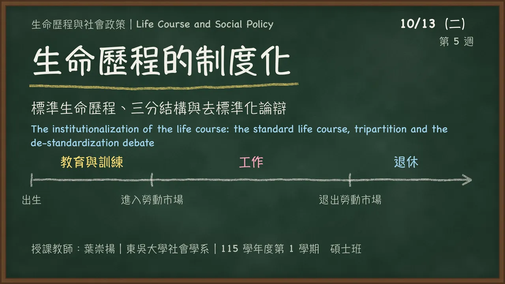
第 5 週，2026 年 10 月 13 日。主題依課綱：生命歷程的制度化：標準生命歷程、三分結構與去標準化論辯。本週必讀兩篇：Kohli (2007) 與 Brückner & Mayer (2005)。
封面下方的時間軸是三分結構。Mayer & Schoepflin (1989: 196) 轉述 Kohli 的說法：教育與訓練、積極僱用、退休後的年歲。Kohli (1986) 原文寫的是準備、活動、退休（第 3 週講義第 61 頁）。
本週要問兩件事：這條線還在不在？要用什麼證據判斷？
本講分六節加收尾。第 01、02 節是理論：Kohli 回頭檢討自己的制度化命題，以及「勞動市場還是國家」之爭。第 03 節拆解去標準化的概念。第 04 節讀三份實證研究。第 05 節回到台灣。第 06 節談政策。
三個課堂討論分散在第 02、03、04 節的最後。
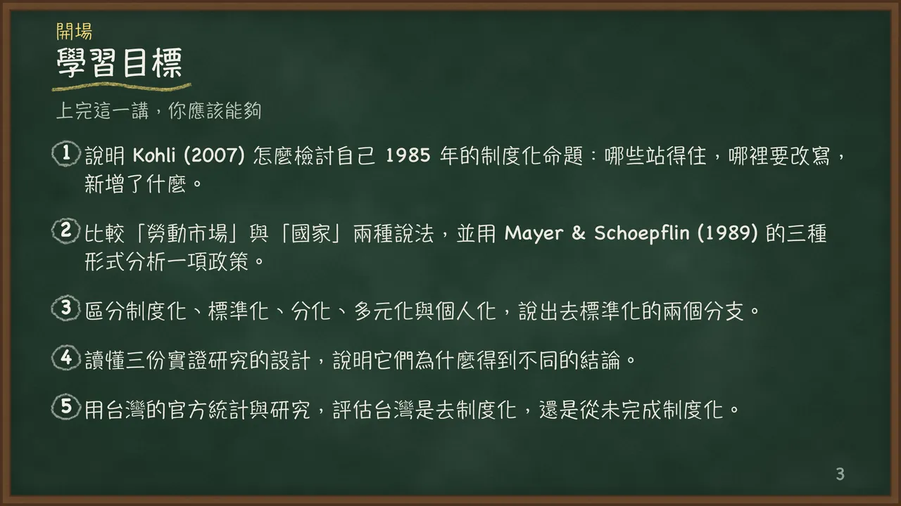
五個目標依序對應本講的節次。目標 1 對應第 01 節，目標 2 對應第 02 節，目標 3 對應第 03 節，目標 4 對應第 04 節，目標 5 對應第 05 節。
目標 5 是第 3 週留下的問題（第 3 週講義第 88 頁），本週在第 05 節回答。
讀完本週，可以回到這一頁，自評哪一個目標還不清楚。
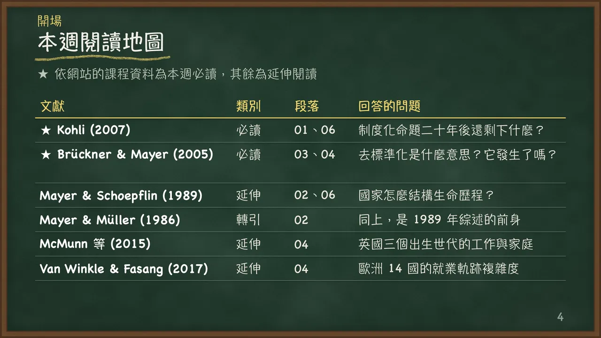
Mayer & Müller (1986) 本講義未取得全文，只透過 Mayer & Schoepflin (1989) 與 Kohli (2007) 轉引，表上標為「轉引」。
★ 的標示依網站的課程資料：本週必讀是 Kohli (2007) 與 Brückner & Mayer (2005)。其餘四篇是延伸閱讀。
閱讀建議：Kohli (2007) 可以先讀 pp. 257–259 與 263–268。Brückner & Mayer (2005) 先讀 pp. 31–35 的概念，再看表 1 與表 3。Mayer & Schoepflin (1989) 先讀 pp. 197–200 與 203。
Van Winkle & Fasang (2017) 的頁碼依課程資料夾的 PDF（線上優先版，頁 1–29）。課綱列的正式版是 Social Forces 96(1): 1–30，兩者頁碼可能略有不同。
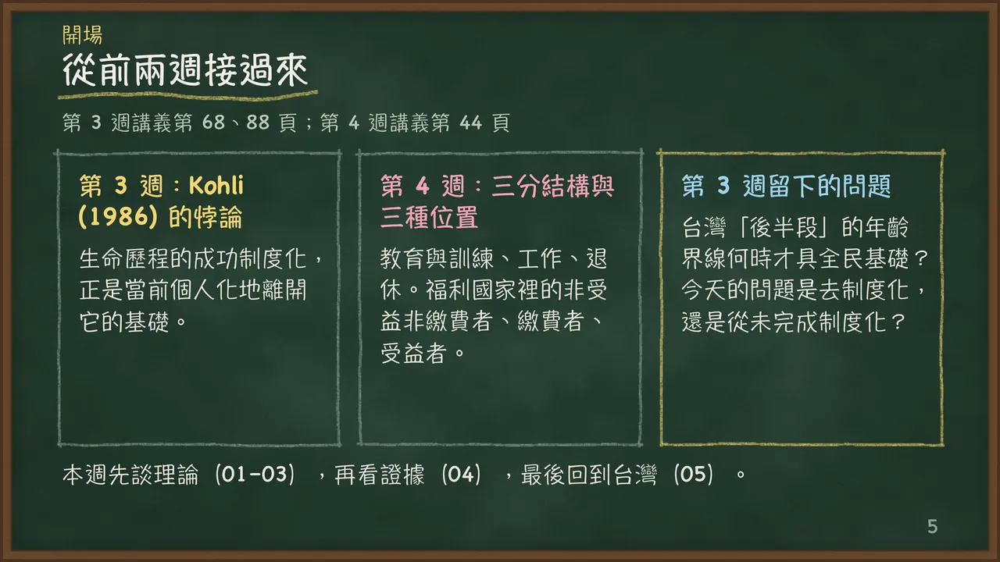
Kohli (1986) 的五項命題與悖論，第 3 週已經講過（第 60–68 頁）。本週只在這一頁回顧，不再重講。
第 4 週第 44 頁介紹過三分結構與福利國家中的三種位置（Settersten & Mayer 1997: 248–249 引 Mayer & Schoepflin 1989）。本週第 02 節會回到 Mayer & Schoepflin 的原文。
右邊這張卡片是第 3 週最後留下的問題，本週第 05 節回答。
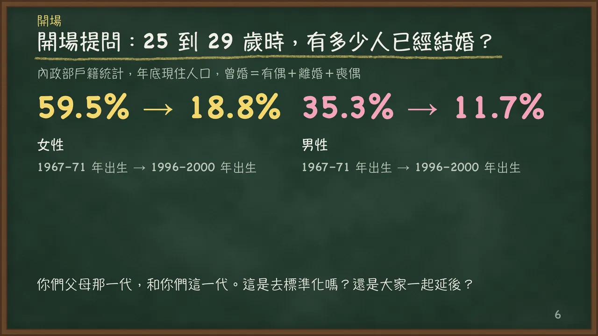
數字是 25–29 歲時的曾婚比例。1967–71 年出生者取 1996 年底，1996–2000 年出生者取 2025 年底，這兩年底他們都正好 25–29 歲。
資料：內政部統計處內政統計查詢網 c0110301「15歲以上婚姻狀況」，與戶政司「人口數按年齡及婚姻狀況」逐格相同。曾婚＝有偶＋離婚／終止結婚＋喪偶，也就是 1 減未婚比例。
官方只公布五歲年齡組，沒有單一年齡的婚姻狀況表，所以用 25–29 歲（中點 27 歲）近似 Brückner & Mayer 的「27 歲時已婚比例」。第 05 節會再談。
先猜猜看，再看答案。接著想一想：如果大家只是一起晚婚，算不算去標準化？這個問題第 03 節回答。
網址：https://statis.moi.gov.tw/micst/webMain.aspx?sys=100&funid=defjsp ；https://www.ris.gov.tw/app/portal/346
第一節
The institutionalization thesis, twenty years on
這一節要回答 1985 年的制度化命題，哪些站得住？哪裡要改寫？又新增了什麼？
本節文獻 ★ Kohli (2007)
第 01 節讀 Kohli (2007)。這是作者回頭檢討自己二十年前理論的文章。
本節的順序：先看他怎麼界定問題，再看三個判斷：站得住的、要改寫的、新增的。最後看他對去標準化爭論的經驗判決。
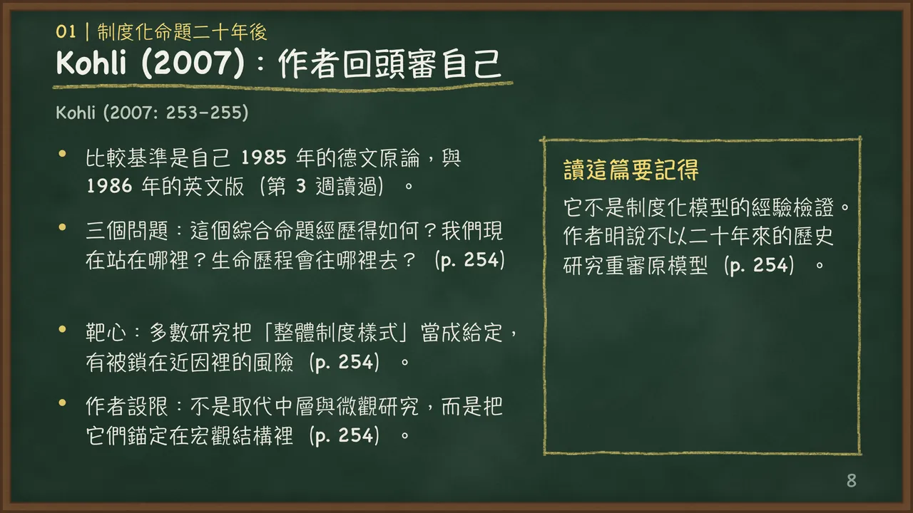
Kohli (2007) 的文類很特別：作者回頭審自己二十年前的理論。比較基準是 Kohli (1985) 的德文原論與 Kohli (1986) 的英文版。
p. 254 的三個問題：How has this synthesis fared, where do we stand now, and where will the life course go from here?
p. 254 的方法論診斷最值得引用：許多研究把生命歷程的整體制度樣式視為理所當然，因而有被鎖在近因裡、錯置發現之脈絡效度的風險。但他立刻限定：不是要取代中層與微觀研究，而是要把它們錨定在宏觀結構裡。引用時這句限定要跟著。
右邊的提醒：作者在 p. 254 明說，不在二十年來的歷史研究之光下重審原模型。所以這篇不能當成模型的經驗支持。
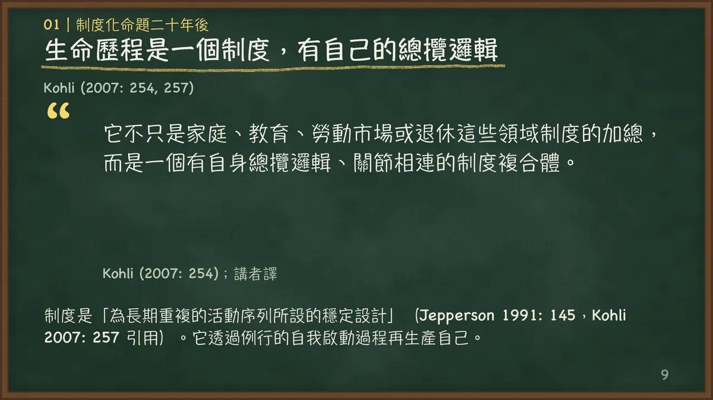
這是本文的本體論主張，也是後面所有判斷的前提。原文在 p. 254。
下方的制度定義是 Kohli 借自 Jepperson (1991: 145) 的：stable designs for chronically repeated activity sequences。Kohli 只借了兩點：規則體系，以及自我啟動的再生產。
對照第 3 週：Kohli (1986) 已說生命歷程是「一套排序生命關鍵維度的規則樣式」（第 3 週講義第 60 頁）。2007 年版把它接上組織研究的新制度論。
p. 259 他自己說，「統一整體還是領域加總」的爭議現在似乎已被正面解決，但要用實質的詞把整體樣式講出來仍然困難。
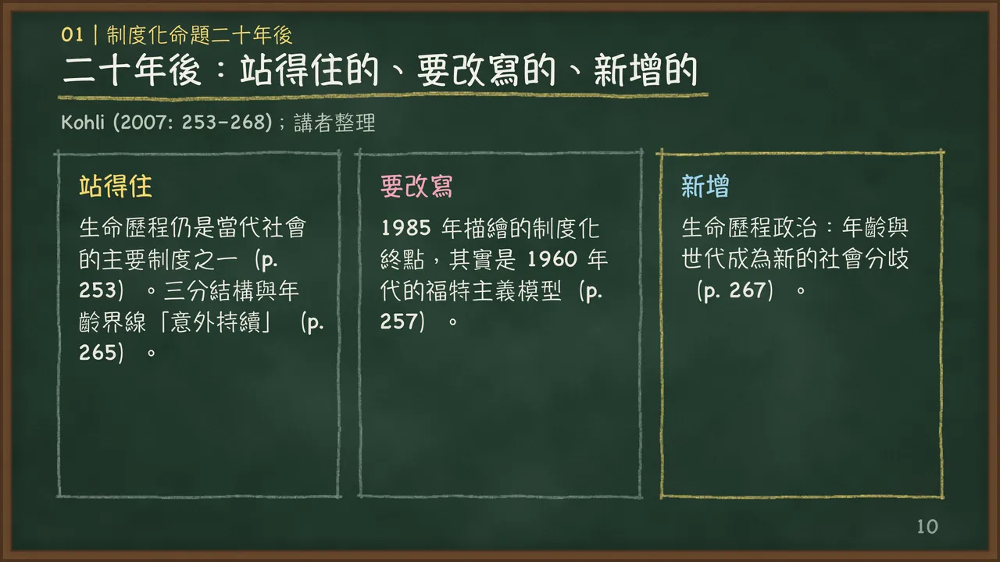
這三欄是講者的整理，不是 Kohli 自己列的表。
站得住：摘要 (a) 重述生命歷程已成當代社會主要制度之一（p. 253）。p. 265 說制度化生命歷程的「意外持續」（unexpected persistence）。
要改寫：p. 257，With hindsight it is easy to see。他當年辨識為現代化暫時終點的制度化生命歷程，對應的是 1960 年代。
新增：p. 267 的最後一節。1985 年的原論完全沒有這一塊。本節最後兩頁會談。
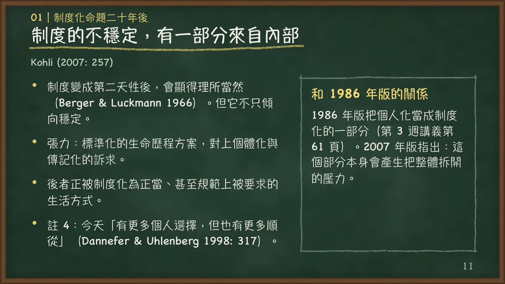
p. 257：制度化生命歷程的動態，不只來自外部變化，部分是內生的（endogenous）。
不穩定的來源：標準化的生命歷程方案，與個體化及傳記化（biographization）訴求之間的張力。後者正日益被制度化為正當、甚至規範上被要求的生活方式。
註 4 把這個張力界定為規範層次：一邊是規制特定年齡選擇與適當行為的年齡規範（Settersten & Hagestad 1996a, 1996b），一邊是強調個人發展與自主的生命歷程規範。
這一點讓 Kohli 可以同時主張「制度仍頑強」與「侵蝕的壓力是真的」，而不自相矛盾。
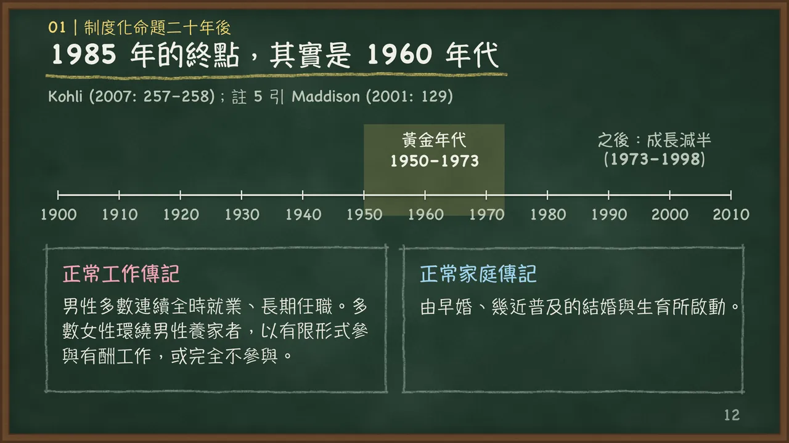
這是 Kohli 對 1985 年原論最重要的自我修正。p. 257：當年辨識為現代化暫時終點的制度化生命歷程，對應的是一個相當特定的歷史時期，1960 年代。許多特徵當時匯聚成如今常被稱為「福特主義」的社會結構與生命歷程模型。
宏觀基礎：快速而看似穩定的經濟成長、低失業、福利國家擴張（p. 258）。
註 5 引 Maddison (2001: 129)：1950–1973 年的「黃金年代」是迄今經濟成長最成功的階段。先進資本主義經濟體的人均 GDP 年成長率，是其後 1973–1998 年的兩倍。圖上「成長減半」就是這個意思。
Brückner & Mayer (2005: 31) 獨立得到相同的判斷：那個樣式侷限在一個短而例外的黃金年代。第 03 節會看到。
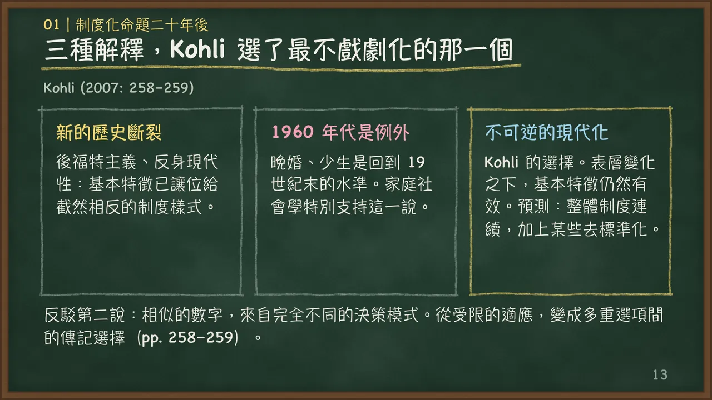
p. 258–259 列出三個互相競爭的解釋方案。
第一說：新的歷史斷裂。「後福特主義」常被用來設定福特模型已讓位給截然相反的制度樣式。註 7 提到 Beck 的反身現代性。
第二說：1960 年代是歷史異例，此後回到長期常態。結婚率、生育率下降，初婚、初育年齡上升，可被看成回到 19 世紀末與 20 世紀初的水準。
Kohli 對第二說的反駁最漂亮：相似的量化水準，是由高度不相似的家庭決策模式產生的。過去是對物質與社會壓力的受限適應，有時還有法律編碼，例如對經濟上無法獨立者的結婚禁令。現在是在多重選項間的傳記選擇。在決策模式的層次上，並沒有回到原狀。
第三說是他的選擇（p. 259）：制度化的模式可能已從外部的位置序列，轉移到個人的經營。這預測整體的制度連續，加上某些去標準化，而這對應經驗紀錄。
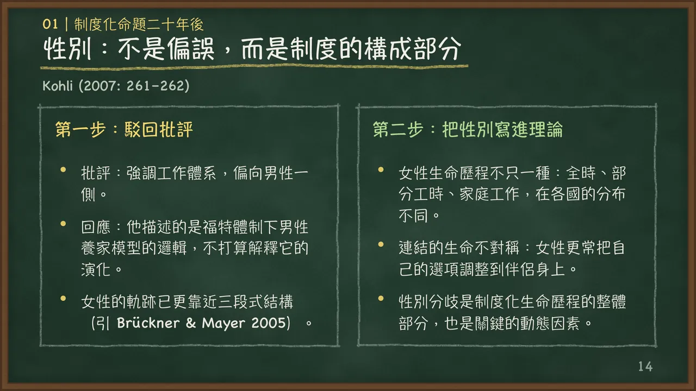
p. 261：主要的爭論一直圍繞性別。強調生命歷程透過工作體系而結構化，一直被批評偏向男性一側。
第一步是駁回：這項批評是錯的，因為他的論證描述的是福特體制下男性養家模型的邏輯，不打算解釋它的演化或轉型。對照第 3 週第 67 頁：Kohli (1986) 註 5 已承認論證聚焦正式工作、侷限於男性一側。
第二步是實質接受（p. 262）：性別要求一種視角，看僱用如何在整個生命歷程中與無酬的家庭工作相連。連結的生命方面，女性比男性更常把自己的選項調整到伴侶的選項上。
節末的升格句：性別分歧證明是制度化生命歷程的整體部分，也是它的關鍵動態因素之一。兩步之間有張力，值得討論：1986 年是「沒處理」，2007 年變成「關鍵因素」。
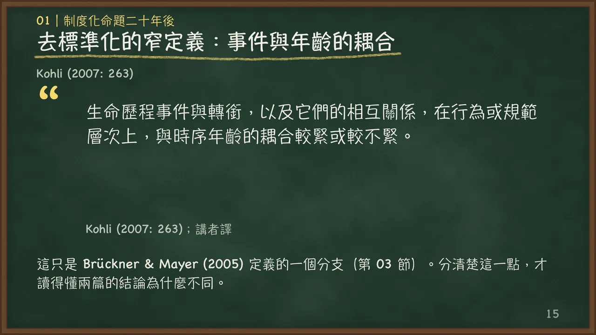
p. 263：時序上的（去）標準化不是制度化生命歷程模型的唯一維度，但可能是最受注目的一個。
定義的原文：life-course events and transitions, and their interrelations, are more (or less) tightly coupled to chronological age, on a behavioral and/or normative level。
兩個重點：一、它是耦合強度的問題，不是「什麼都變了」。二、它區分行為層次與規範層次。後者就是年齡規範，本節後面會看到。
第 03 節會比較：Brückner & Mayer (2005: 32–33) 的定義有兩個分支，普及率與離散度。Kohli 這個定義只對應離散度那一支。
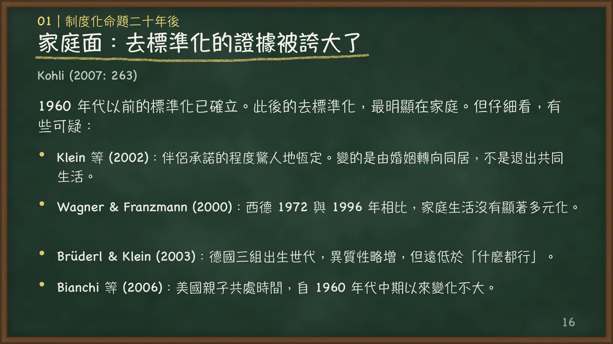
p. 263：現代生命歷程在 1960 年代以前時序標準化增加，已確立無疑。此後某種程度的去標準化似乎也是。最明顯的領域是家庭。但仔細檢視之下，這些主張有些可疑（there is some doubt about these claims）。
四項反證都是 Kohli 轉引的：Klein、Lengerer & Uzelac (2002) 用 1990 年代初中期的 Fertility and Family Survey。Wagner & Franzmann (2000) 是西德 1972 與 1996 年的橫斷比較。Brüderl & Klein (2003) 比較 1954–57、1958–67、1968–82 年出生的三組世代。Bianchi、Robinson & Milkie (2006) 是美國的時間運用研究。
注意：Kohli 在這裡用的是他自己的窄定義（年齡耦合）。用 Brückner & Mayer 的寬定義，家庭面的普及率下降本身就算去標準化。第 03 節會再比較。
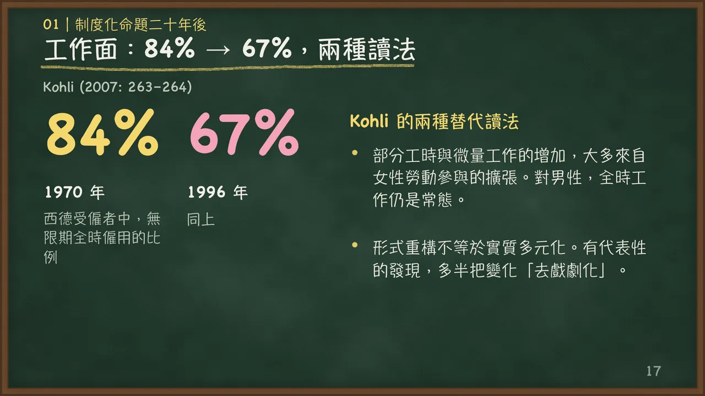
p. 263：西德的「正常工作契約」，也就是無限期的全時僱用，在 1970 到 1996 年間由所有受僱者的 84% 降到 67%。這個數字已成為德國個體化辯論的標誌，被當成內部勞動市場「終生」僱用終結的指標。
Kohli 提出兩種替代讀法（pp. 263–264）。第一，部分工時與微量工作的增加大多源於女性勞動參與擴張。對男性，全額工作量雖然變短，但是集體地變短，仍然是常態。
第二，如同家庭領域，形式重構與實質多元化不同。多數有代表性的發現傾向把變化去戲劇化（Kohli 2000b）。他自己承認這是反直覺的結果，或許是有代表性的調查在捕捉變化時有慣性。
想一想：台灣常被引用的哪個數字，也可以有這兩種讀法？
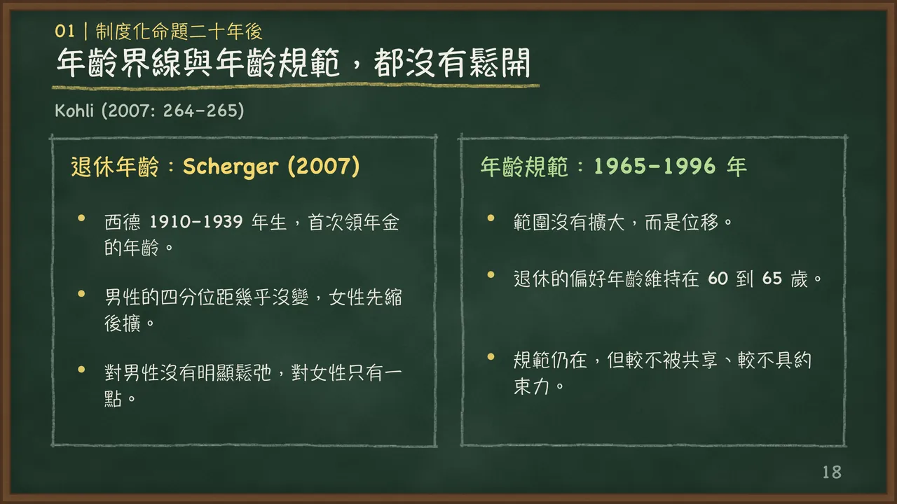
左欄：Kohli 稱 Scherger (2007) 是對去標準化程度的一份出色綜合評估（p. 264）。Scherger 用西德 1910 到 1939 年出生的世代，報告首次領取年金年齡的中位數，以及 25% 與 75% 完成轉銜的年齡。
p. 265 的結論句：沒有跡象顯示退休這條年齡界線對男性有強烈的鬆弛，更談不上解消，對女性則只有一點。
工作面另有兩項證據（p. 264）：多數 OECD 國家 1980–1995 年的任職年資沒有下降。到 2004 年，10 年以上長期僱用的比例在多數國家沒有顯著下降，唯一例外是盎格魯－撒克遜群集。
右欄（p. 265）：年齡規範是關於某些轉銜應該或不應該在哪些年齡發生的共同信念。它浮現的圖像較曖昧。範圍寬窄沒變、位置位移了、共識與約束力下降了。這是三個可以分開測量的成分。
p. 265 的判決全文：家庭與工作樣式的變化，到目前為止都遠比宣告「我們所知的生命歷程終結」的人所期待的更不顯著。某些轉銜確實有去標準化與多元化的傾向，尤其在家庭領域，但遠比常被宣稱的有限。
他也承認最終的證據尚未齊備。但就目前而言，長期生涯軌跡與整體三段式結構對男性仍然穩固，女性也在某種程度上朝這個結構匯聚。這些發現與許多理論假定、以及公共論述中的多數假定相矛盾。
p. 265–266 另有一個可操作的判準：多元化若在社會階級與生活風格之間產生差異，應假定它是受社會形塑的樣式。若階級與生活風格內部的異質性增加，才是選項真正多元化。第 04 節讀 McMunn 等 (2015) 時會用到。
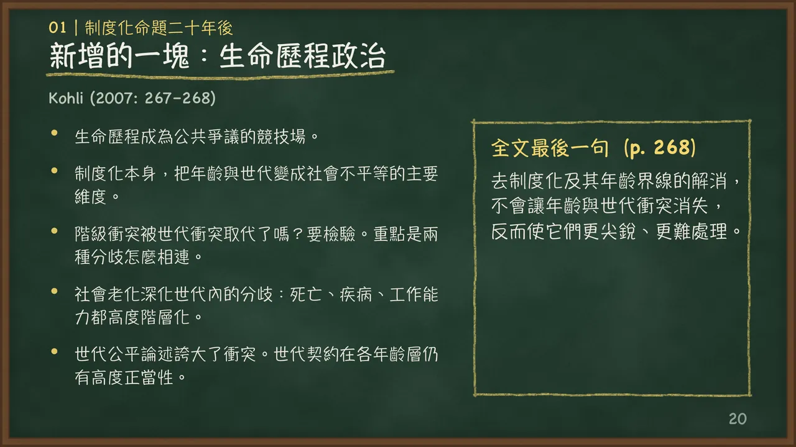
p. 267：生命歷程取徑擴張的第二個理由是外部的：生命歷程成了政治規制與衝突的場域。年齡與世代成為潛在強大的新社會分歧結構的基礎（引 Kohli 1988、2006）。
論證鏈（pp. 267–268）：福利國家起源時要處理的是工業勞工的整合，也就是階級衝突的綏靖，方法是保證某種穩定的生命歷程，包括把退休變成正常的生命階段。今天常聽到階級衝突已被世代衝突取代。Kohli 說要評估世代分歧的程度，以及它在多大程度上遮蔽了階級分歧。與其把兩者當成互斥的對手，不如看它們怎麼連結。
p. 268：關於年輕人與老年人福祉與態度差異的研究一致顯示，世代間的分配衝突遠比世代公平論者所說的更不顯著。調查資料表明，公共世代契約在各年齡與人口區段仍享有高度正當性。
右邊是全文最後一句。理由：年齡分級的方案透過為衝突提供集體解決方案，解除了衝突的引信。第 06 節會回到這一點。
第二節
Labour market or the state?
這一節要回答 是什麼結構了生命歷程？國家又是怎麼做到的？
本節文獻 Mayer & Schoepflin (1989)；Mayer & Müller (1986)，本講轉引
第 02 節讀 Mayer & Schoepflin (1989)。它是「國家如何結構生命歷程」這條研究線的原始綜述，理論基礎是 Mayer & Müller (1986)。
Mayer & Müller (1986) 本講義未取得全文。凡是引到它的地方，都是透過 Mayer & Schoepflin (1989) 或 Kohli (2007) 的轉引，並標明轉引。
第 3 週第 65 頁看過 Kohli (1986) 對這一派的回應：「如果福利國家生產了現代生命歷程，那麼是什麼生產了福利國家？」本節看另一方怎麼說。
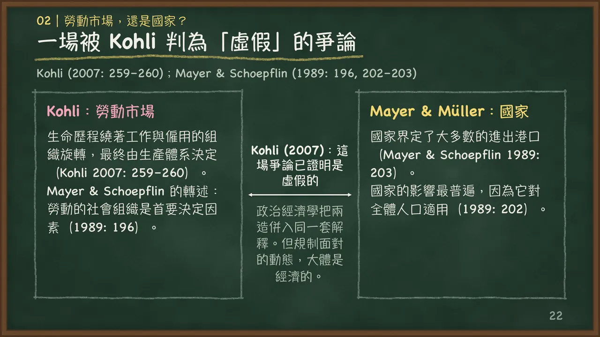
Kohli (2007: 259–260)：我自己的答案曾是生命歷程繞著工作與僱用的組織旋轉，由勞動市場、最終由生產體系所決定。其他人把答案集中在國家上（例如 Mayer & Müller 1986）。今天，這場爭論已證明是虛假的（spurious）。
判為虛假的理由是文獻的：比較福利國家與資本主義多樣性的文獻，已把兩造併入同一套解釋。但他從中讀出的重心偏向經濟：僱用體系的結構性權力仍未被打破，規制所面對的動態大體是經濟的（p. 260）。
Mayer & Schoepflin (1989) 的立場更強。p. 202：除了現代企業對大公司員工的效果，國家的衝擊肯定是最強有力的一個，也大概是最普遍的，因為它對全體人口適用。p. 203：國家界定了大多數的進出港口。
想一想：如果爭論「已解決」，是雙方在同一水平上會合，還是一方的框架吸收了另一方？
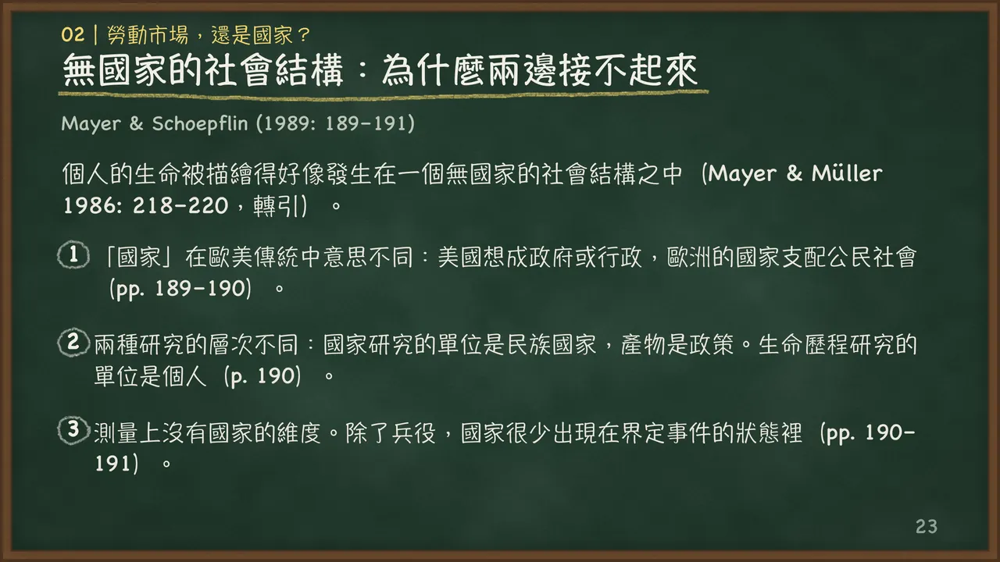
p. 189 的招牌診斷：雖然國家在社會層次上占據顯著位置，個人生命卻被描繪得好像發生在無國家的（state-less）社會結構之中。這句引自 Mayer & Müller (1986: 218–220)。
三個理由。第一（pp. 189–190）：國家概念在歐美差異極大。註 1 說，歐洲之所以沒有「國家與生命歷程」的理論，正因為國家對個人生命的衝擊太明顯，以致在概念上被忽略，或下放給德國的 Sozialpolitik、英國的 social administration。
第二（p. 190）：國家研究的分析單位是民族國家，國家活動的產物是政策，不是人。生命歷程研究的單位是個人。因此兩邊之間幾乎沒有直接的經驗連結。
第三（pp. 190–191）：在我們測量生命歷程的主要維度中，沒有國家維度。國家的衝擊無法被直接觀察或量化分析。這一點今天大體仍然成立。
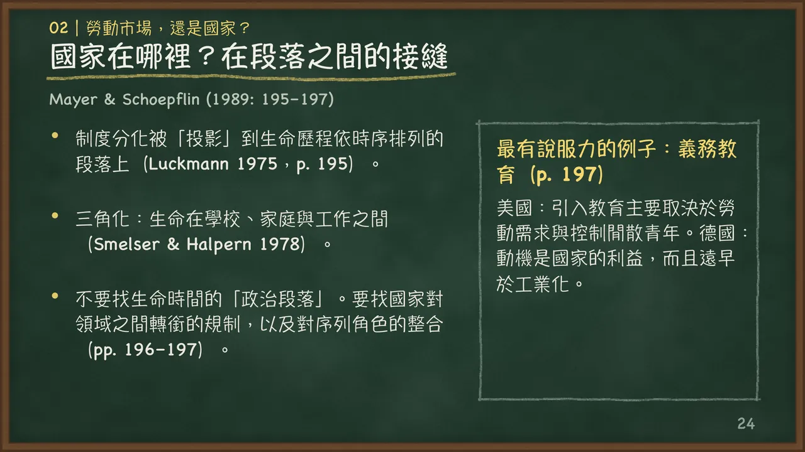
p. 195：傳統家戶曾是生產、消費、再生產、社會化與政治權威的首要場所。家戶與企業的法律分離、家庭與學校的功能分工，直接轉譯為個人的分格角色。Luckmann (1975) 的公式：把社會宏觀層次的制度分化，投影（mapping）到生命歷程依時序排列的段落上。
p. 196 也轉述 Kohli (1985, 1986) 的三分化，並指出 Albers (1973) 遠更早提出這個概念。
本節最重要的分析動作在 pp. 196–197：在個人生命史的層次上，不應去找「政治角色」或「政治段落」，而應去找國家對領域之間轉銜的規制，以及對序列社會角色的整合。國家不出現在段落裡，出現在段落之間的接縫上。
右邊（p. 197）：義務教育是國家建構生命歷程最具說服力的實例。美國的社會史研究顯示，引入教育高度取決於勞動需求與控制閒散青年的問題，不是主要被當成工作準備期。德國的動機是國家利益，而且遠早於工業化。
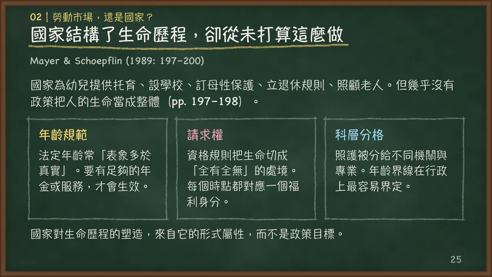
pp. 197–198 是全文最該獨立引用的觀察：現代國家對生命各階段的特殊性關切得不得了。但我們幾乎找不到明白涉及人的生命作為整體、甚至意識到自身政策有後續生命效果的政策。
所以作者轉問（p. 198）：當基本需求與安全由國家而非初級群體提供時，生命歷程結構怎麼改變？限制國家行動庫、並在處理問題時產生特定選擇性的形式屬性是什麼？這些屬性來自國家可用的行動工具、正當使用的規則，以及組織機器。
三種形式接下來各用一頁說明。注意作者的評價：第一種（年齡規範）的重要性可能被高估，第二種（請求權）才是真正有力的機制。
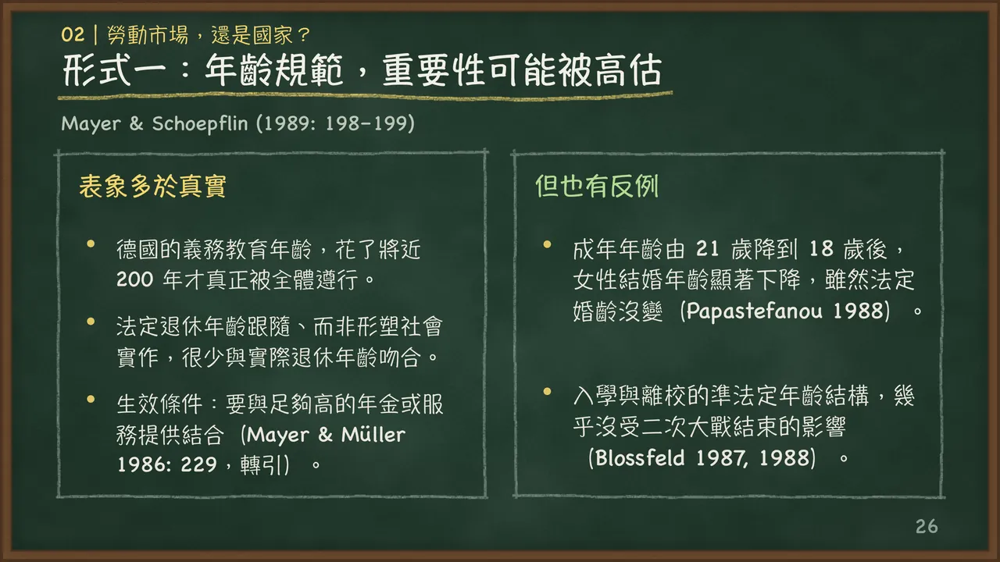
p. 198：立法中的年齡規則，例如入學年齡、童工禁令、法定婚齡、法定退休年齡，曾有也仍有相當衝擊。但證據顯示它們的重要性可能被大幅高估。與年齡相關的法律規定經常是表象多於真實（more apparent than real），引 Mayer & Müller (1986: 226–230)。
三項證據：德國的義務教育年齡花了將近 200 年才真正被全體遵行。法定退休年齡跟隨而非形塑社會實作，在美國即使有反向立法，退休年齡仍傾向下降。生效條件：法定年齡只有與其他手段結合時才有效，例如足夠高的年金，或像學校那樣的服務提供（Mayer & Müller 1986: 229）。
右欄兩個反例（pp. 198–199）。Papastefanou：原文記為 1972 年把成年年齡由 21 歲降到 18 歲，女性結婚年齡顯著下降，雖然女性的法定婚齡仍是 16 歲。Blossfeld：年齡規範存續下來，儘管國家秩序實際上已經崩解。這證明年齡規範強大，也證明那種強大不來自國家的即時強制力。
銜接第 4 週第 82 頁台灣的年齡界線，與第 06 節的政策討論。
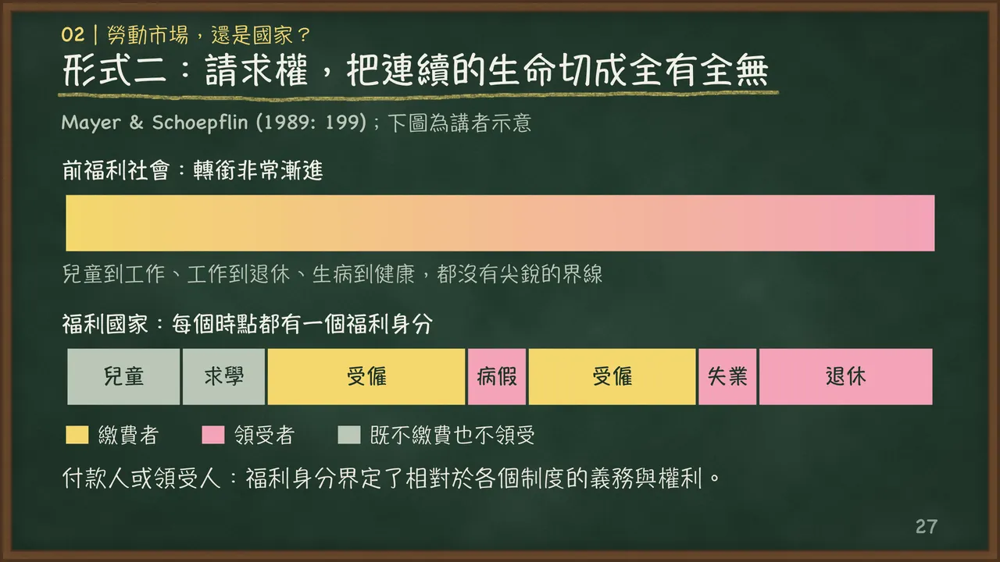
p. 199 是全文最漂亮的一段。起點是普遍主義：法律規則界定普遍、而非逐案的適用性與請求權。現代國家的行動必須依一般法律或行政命令，一致適用於所有符合判準的公民。
機制：形式的資格規則要求對「生命處境」做僵硬的定義。社會保險涵蓋的風險以全有全無的方式處理：一個人要嘛在僱用中、要嘛在勞動力之外，要嘛健康、要嘛在病假中。
對照前福利社會：兒童與工作之間、工作與退休之間、生病與健康之間的轉銜非常漸進。直到中世紀晚期，結婚與未婚之間也常未被清楚標記（Schroter 1984）。
結論句：在福利國家中，連續的生命之流被轉換成一系列處境，每一個都有清楚的形式定義。在任一時點，一個人都有一個福利身分，界定他相對於各個制度的義務與權利，最顯著的是作為付款人或領受人。
下方的色塊是講者示意，不是資料。第 4 週第 44 頁的三種位置（非受益非繳費者、繳費者、受益者）就是這個概念。
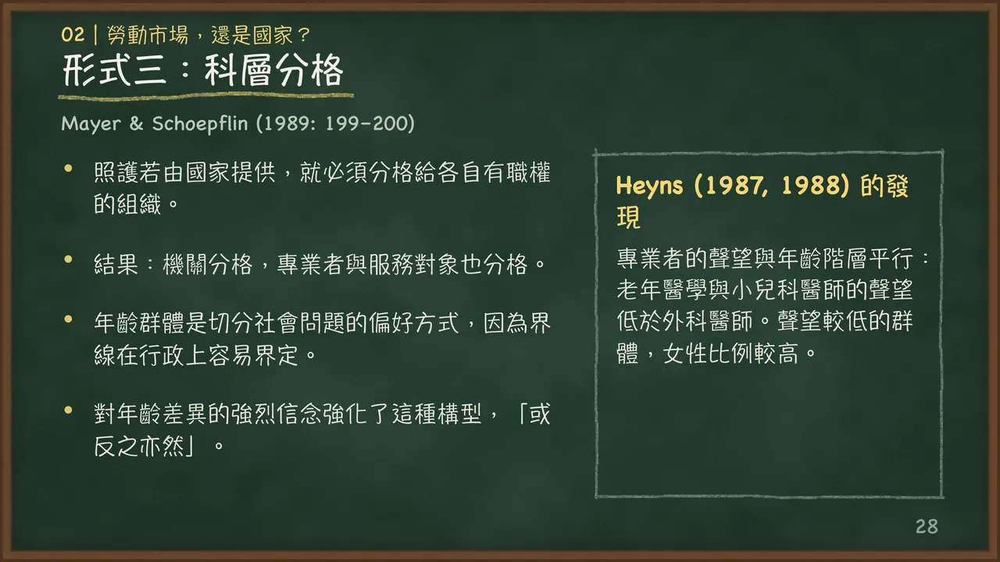
pp. 199–200：福利國家把社會從「個人與家庭以特殊主義且漸進的方式回應需求」，轉變為「由一般規則治理的請求權體系」。另一面是福利國家的組織與日常實施。
如任何大規模組織，分工與明確的職權是國家的基本特徵。照護若由國家提供，就必須分格給各自有職權的組織。於是造就了職權機關的分格，以及專業者與服務對象群的分格（引 Mayer & Müller 1986: 234–235）。
p. 200 的核心句：年齡群體是切分社會問題的偏好方式，因為它們的界線在行政上容易界定。
節末的括號值得注意：這種構型被「年齡群體之間存在重要差異」的信念所強化，或反之亦然（or vice versa）。也可能是先有行政分格，才有那些關於年齡差異的信念。
可以連到台灣：兒少、身障、老人分屬不同法規與服務體系。這是講者的例子，不是原文。
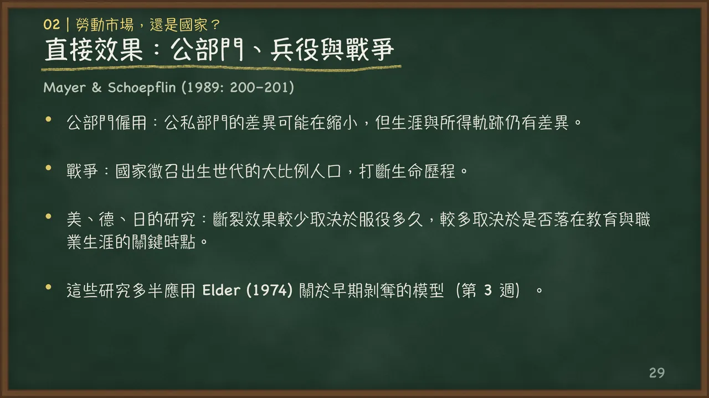
p. 200：前面三種形式是國家活動的潛在與非意圖後果。也有相當直接的效果。第一是公部門僱用的迅速增加。公私部門的差異大概正在縮小（Mayer & Müller 1986: 238–242），但晚近研究顯示生涯與所得軌跡仍有差異。
pp. 200–201：國家在宣戰時對公民的生命做出最劇烈的介入。
本節最可移植的是時機原理（p. 201）：Mayer (1988a)、Elder & Bailey (1986)、Elder & Meguro (1987) 在美、德、日的樣本中顯示，兵役與戰時進入學校或勞動市場的斷裂效果，較少取決於服役的長度，較多取決於剝奪是否發生在教育與職業生涯的關鍵時點。
連到第 3 週的 Elder：同一場戰爭，對不同年齡的出生世代有不同的後果。
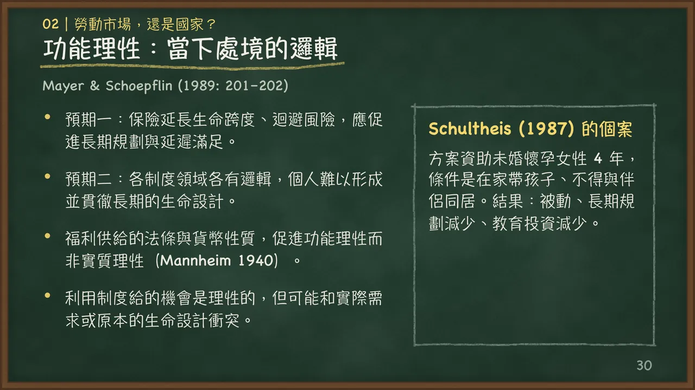
p. 201 的問題：國家對「動機的詞彙」有什麼衝擊？
第一個預期是正向的：福利國家保險帶來的生命跨度延長與風險迴避，應促進穩定的預期、長期的可計算性與延遲滿足。
第二個預期相反（引 Mayer & Müller 1986: 235–238, 242）：制度界定的行動邏輯相對獨立而異質，個人不太可能形成綜合而長期的生命設計並貫徹到底。結構上支持的是「當下處境的邏輯」，而非「持續的個人生命設計的邏輯」。
p. 202：福利供給的法條主義與貨幣性質，促進功能理性而非實質理性（Mannheim 1940）。凡國家建立規則、提供服務或金錢誘因之處，利用這些機會就是功能上理性的。但這可能導致與實際需求或初始生命設計相扞格的決定。
右邊的個案是唯一具體的例子，結論是對這些女性後來的生命機會造成災難性的後果。可以連到第 06 節：給付的資格若綁定某種生活安排，期滿後可能留下更差的生命機會。
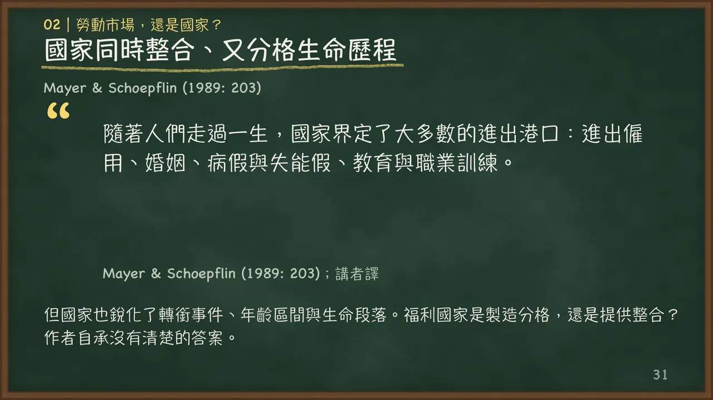
p. 203 是本文的總結論，結構是一對相反的清單加上一句自承未決。
整合的一側：國家界定大多數的進出港口，把這些轉銜變成公共的生命事件，並在人們流經分化的領域時把它們相互扣連。國家有助於連續而連貫的生命，不只在生物上，也在社會上。
分格的一側：同一個過程中，國家銳化了轉銜事件、年齡區間與生命段落，並提供外部的而非個人創造的秩序。
還有兩組效果：增加個人安全、減輕對他人的依賴，使社會連帶弱化，個人可以承擔換工作、離婚或遷移的風險。健康、失業與老年保險則防止突然的所得損失，在生命中提供連續性。
最後一句自承未決：福利國家是在生命歷程內部產生分格，還是提供整合與連續性，並沒有清楚的答案。第 7 週讀 Leisering (2003) 時會看到後續的發展。
兩到三人一組，每組選一項政策。
第 1 題對應 pp. 198–200 的三種形式。一項政策可能同時用到兩種以上。
第 2 題對應 p. 199 的福利身分：付款人或領受人。提示：資格門檻（例如年資、年齡、投保身分）正是把連續的生活切成身分的地方。
第 3 題對應 pp. 197–198 的觀察：國家結構了生命歷程，卻從未打算這麼做。
第 4 週第 82–84 頁有台灣的年齡界線與政策時間軸，可以當作素材。
第三節
What might de-standardization mean?
這一節要回答 去標準化是什麼意思？要什麼證據才算數？
本節文獻 ★ Brückner & Mayer (2005: 27–36)
第 03 節讀 Brückner & Mayer (2005) 的前半：概念與假設。後半的實證放在第 04 節。
這篇的順序很特別：先造概念、再造假設、再造證據。引用時最該引的其實是 pp. 31–35 的概念與假設，不是結論。
本節最後用三頁說明序列分析的直覺，幫助讀懂第 04 節的兩篇研究。
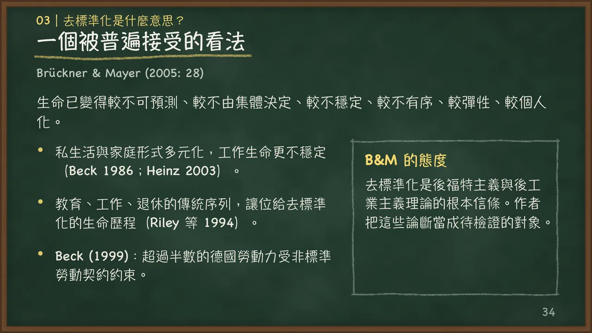
p. 28 的第一句就把靶立好：生命已變得較不可預測、較不由集體決定、較不穩定、較不有序、較彈性、較個人化，這是關於先進社會最普遍被接受的看法之一（引 Held 1986；Buchmann 1989；Myles 1993）。
接著列出這個看法的幾個版本，每一個都附上出處。Beck (1999) 的數字是作者的轉述，不是本文的估計。
收束句：去標準化的生命歷程，既是後福特主義、也是後工業主義理論的根本信條。
作者在 p. 31 稱這些論斷是「隨意的觀察」與「一概而論」：概念上缺乏精確，也缺乏系統資料。全文的任務就是補這兩樣。
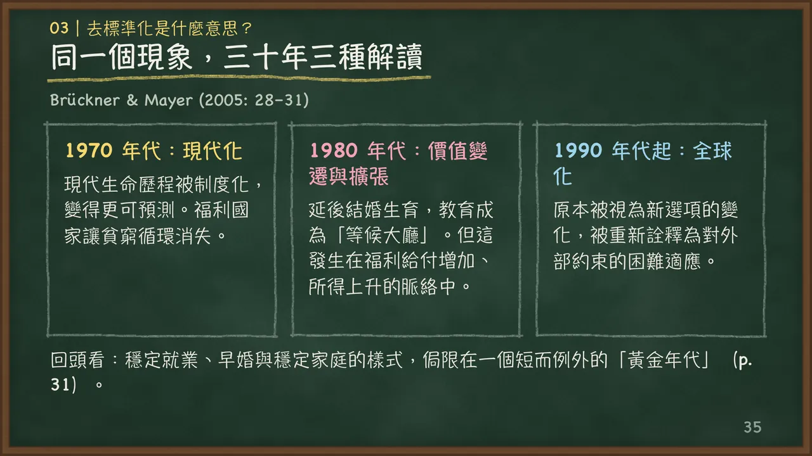
pp. 28–31 把去標準化論旨的來源拆成三個時期。拆開之後看到：同一個現象在不同十年被賦予相反的意義。
1970 年代：問題是什麼區分了「現代」與「傳統」生命歷程。答案包括制度化（Kohli 1985），以及福利國家保障使貧窮循環消失（Mayer & Müller 1986；Mayer & Schoepflin 1989）。
1980 年代：價值變遷、教育擴張、婦女運動、石油危機。作者特別限定：這一切發生在福利給付增加、實質所得上升的脈絡中（p. 30）。
1990 年代：1970、1980 年代被視為新選項的變化，在 1990 年代被重新詮釋為對外部約束的困難適應（p. 30）。
p. 31 的收束：那個樣式似乎被侷限在一個相當短而例外的歷史時期，一個「黃金年代」，其前後都是更動盪的時代。這與 Kohli (2007: 257–258) 的判斷一致，兩篇是各自獨立達到的。
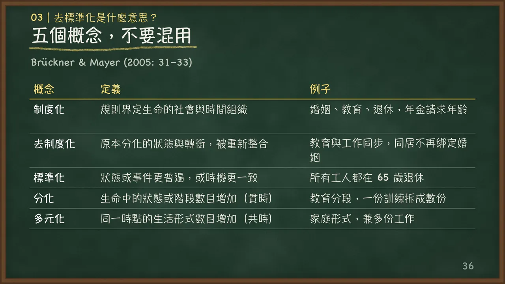
第六個概念「個人化」，作者視為詮釋性的概念，不列入可測量的維度（p. 33）。
pp. 31–33 是本文最該被引用的一節。作者點名五個常被交替使用的概念，主張它們觸及的是可以彼此獨立變動的維度。
制度化（p. 32）：規範、法律或組織規則界定人類生命的社會與時間組織。作者接著用福利國家操作化：既不繳費也不領受的期間（童年）、繳費但不領受（就業）、不繳費但領受（老年、疾病、失業）。這和第 02 節 Mayer & Schoepflin 的福利身分是同一個東西。
去制度化（p. 32）的例子帶一個弔詭：先同居再結婚，使婚姻部分去制度化，但也把一段插曲變成兩段，增加了分化。
標準化的例子是原文的：若所有工人都退休，而且都在 65 歲退休（p. 32）。
分化與多元化的差別在時間軸的方向（p. 33）：分化是貫時的，多元化是共時的。去分化的例子很難想到，暗示底層趨勢不可逆。
個人化（p. 33）：較具詮釋性的概念。正面的意思近年已與「非自願的個人化」混合：被判定去走不是集體踩出來的路。
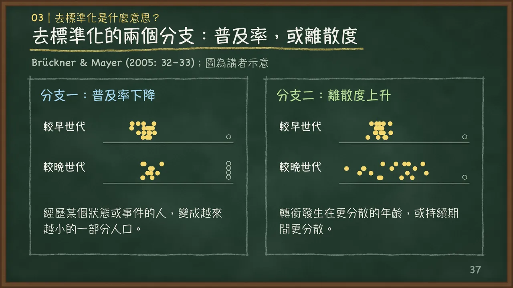
pp. 32–33 的定義：去標準化意謂生命狀態、事件及其序列，可能變成只有越來越小一部分人口會經歷的經驗，或發生在更分散的年齡與更分散的持續期間。
這是雙分支的定義：普及率，或離散度。圖是講者的示意。每個點是一個人，橫軸是年齡，右側空心點是沒有經歷該事件的人。
原文的例子：婚姻與為人父母先到 1970 年代為止更標準化，然後更去標準化（Espenshade 1985）。美國生涯起點的權宜工作（stop gap jobs）。德國退休年齡的日益模糊（Ebbinghaus 2002）。
回到開場提問：25–29 歲曾婚比例下降，屬於哪一支？如果只是大家一起延後，兩支都不一定成立。
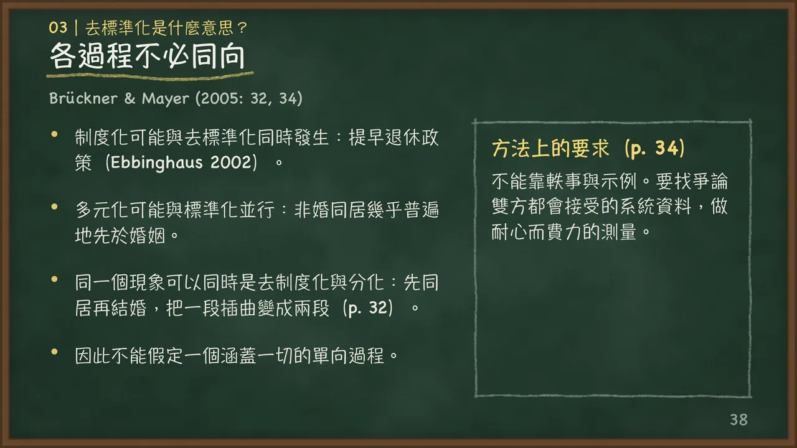
p. 34 的兩項推論是全文方法論立場的濃縮。
第一，各過程不必同向。制度化有可能與去標準化耦合，如提早退休政策。多元化可能與標準化攜手，如非婚同居幾乎普遍地先於婚姻。所以不能假定一個涵蓋一切的單向過程，做宏大概括時要謹慎。甚至可以質疑：援引一個整體趨勢，是否製造的混亂多於清晰。
這一點是 B&M 與 Kohli (2007) 最深的分歧之一：Kohli 把制度化與去標準化放在同一根軸的兩端，B&M 認為它們是兩根軸。
第二，軼事不算證據。要找支持者與反對者都會接受為相關證據的系統資料。對經驗發展做耐心而費力的測量，變成關鍵。
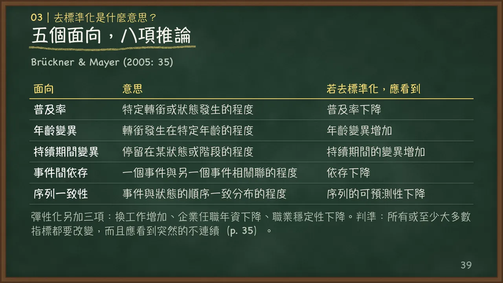
p. 35 是全文最該當清單使用的一段。五個面向逐字對應：prevalence、age variance、duration variance、inter-event dependency、sequence uniformity。
八項推論：前五項對應五個面向。後三項針對彈性化論旨：(f) 工作間的轉換增加，(g) 企業任職年資下降，(h) 職業穩定性下降。
兩項判準才是最終判決的依據。一、根據多數情境，應預期的不只是漸進趨勢，而是相當突然的不連續或趨勢反轉。二、去標準化的證據要求所有或至少大多數指標都改變。
第二條決定了結論：因為只有家庭那組指標改變，所以判決是「沒有一般過程」。第 04 節會看到。
討論②會用這張表。
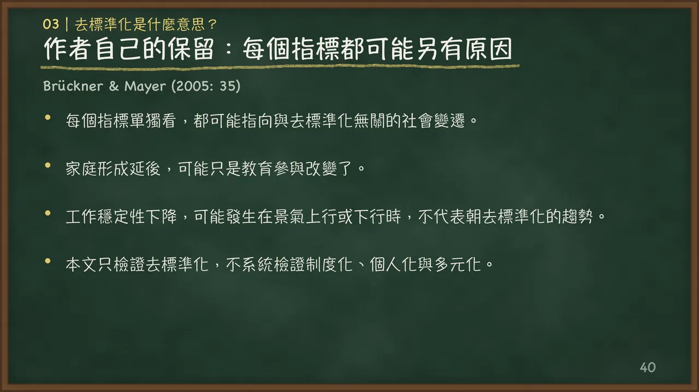
p. 35：這些指標中的每一個單獨來看，都可能指示多重的社會變遷過程，而這些過程原則上可能與生命歷程的去標準化毫無關係。
作者自己給了兩個例子：家庭形成的延後可能僅因教育參與變化而預期。工作穩定性下降可能發生在經濟上行或下行期間。
這段等於作者給出了反駁自己結論的路徑。
同頁的自我限制也要跟著引用：我們聚焦於可能導致去標準化的過程，不試圖系統地產生與制度化、個人化、多元化有關的證據。所以不能把本文引為「個人化命題的反證」。
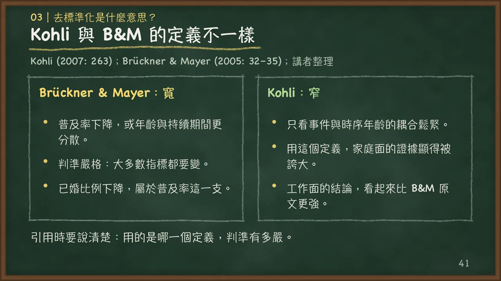
這一頁是講者的整理，不是任何一篇原文的表。
B&M 的定義是雙分支的（pp. 32–33），判準是連乘的（p. 35）：大多數指標都要變。Kohli (2007: 263) 只取了離散度那一支。
後果是雙向的。一方面，Kohli 的窄定義使家庭面的發現更難成立，因為已婚比例下降屬於普及率分支，而非年齡耦合分支。另一方面，Kohli 的窄定義使工作面的結論看起來比原文更強。B&M 只說年齡變異的增加不存在或相當小，同時也報告了序列模糊化、多段訓練增加與 1971 世代換工作率翻倍。
所以「Brückner & Mayer 證明沒有去標準化」是誤讀。正確的說法：去標準化在家庭面成立、在工作面不成立，而「不成立」是相對於一套嚴格判準。
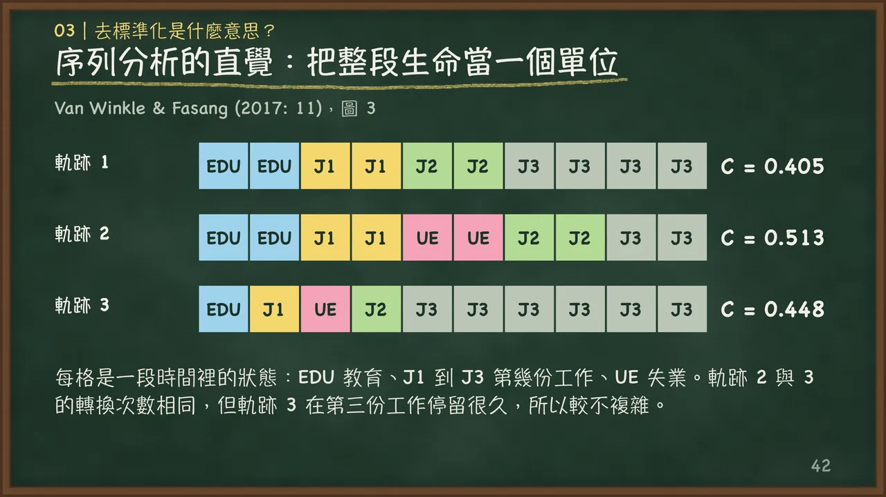
B&M 用的是單一轉銜的年齡。序列分析換一個單位：把一個人整段的狀態序列當成一筆資料。
這三條是 Van Winkle & Fasang (2017: 11) 圖 3 的假想軌跡。軌跡 1 有兩段教育、三份工作，複雜度 0.405。軌跡 2 多了一段失業，複雜度 0.513。軌跡 3 的轉換次數和軌跡 2 一樣，但在第三份工作停留很久，複雜度 0.448。
複雜度由兩個成分組成（p. 11）：轉換的次數，以及序列的熵（狀態分布得多平均、多難預測）。Gabadinho 等 (2011) 的指數是兩者正規化後的幾何平均。原文以 0 到 100 呈現，圖中是 0 到 1。
Kohli (2007: 259) 說微觀研究多停在單一轉銜，缺少把轉銜聚合成完整生命歷程樣式的設計，並指向最適配對分析。序列分析就是在回應這個缺口。
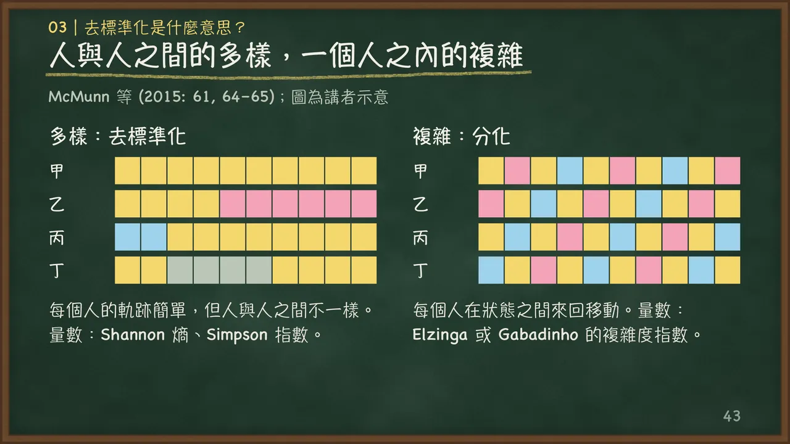
McMunn 等 (2015: 61) 依 Aisenbrey & Fasang (2010) 區分兩件事。人與人之間的多樣（diversity），他們稱為去標準化。一個人之內在狀態之間的移動（complexity），他們稱為分化。
這對應 B&M 的概念：多樣性接近 B&M 的去標準化，複雜度接近 B&M 的分化（p. 33）。Van Winkle & Fasang (2017: 3) 也明說複雜度呼應 B&M 的分化概念。
圖是講者示意。左邊四個人各自簡單，但彼此不同。右邊四個人都在來回移動，彼此反而相似。兩種變化可以各自發生。
下一頁列出量數。
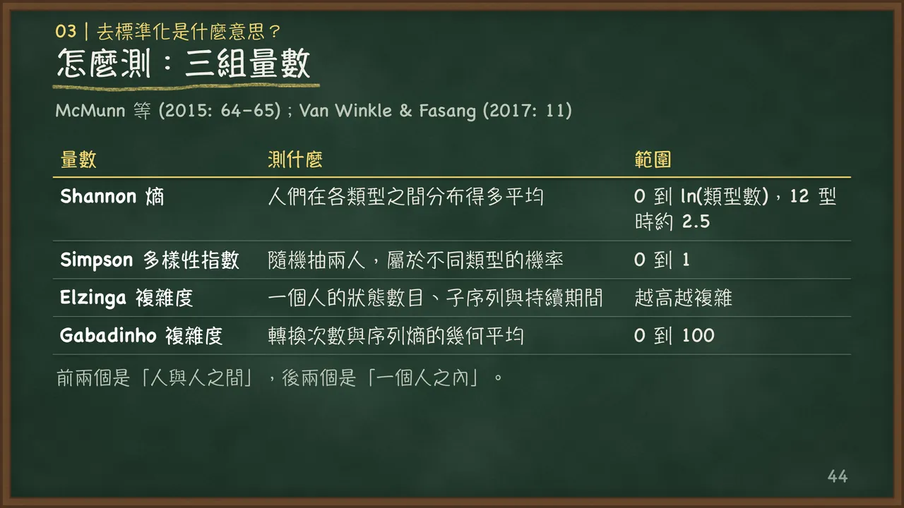
McMunn 等 (2015: 65)：Shannon 熵捕捉某個性別與世代組合中，工作與家庭類型的分布有多集中或分散。值的範圍是 0 到 2.5，也就是 12 個類型數的自然對數。Simpson 指數是隨機抽兩個人屬於不同類型的機率，範圍 0 到 1。
Elzinga 複雜度（McMunn 等 2015: 64–65）：考慮狀態的持續期間，以及不同子序列的數目。每個人各算一個值。
Gabadinho 複雜度（Van Winkle & Fasang 2017: 11）：轉換次數與縱貫熵，各除以最大值後取幾何平均。單一狀態的序列最小，所有狀態等長而且轉換次數最多的序列最大。Van Winkle & Fasang (2017: 3) 說它對「沒有某些狀態」也敏感，所以能納入長期不在勞動力的人。
不需要記公式，記得每個量數在問哪一個問題就好。
第 1 題用 p. 35 的五個面向。提示：普及率要按出生世代算到某個年齡，年齡變異要有分位數，持續期間要有追蹤資料，事件間依存與序列要有個人的事件史。第 05 節會說明台灣的官方資料能做到哪裡。
第 2 題：平均數上升本身不屬於任何一支。要看普及率（某個年齡前已婚的比例）或離散度（四分位距）。
第 3 題對應 B&M p. 43 的限定：婚姻年齡的延後不必然意味家庭形成樣式的去標準化。人們可能較晚結婚，但仍與同齡人在差不多的時間經歷此事件。用 Kohli (2007: 263) 的窄定義，這不算去標準化。用 B&M 的普及率分支，若到某個年齡已婚的比例下降，就算。
第四節
Did it actually take place?
這一節要回答 三份研究的結論為什麼不同？看它們測什麼、測誰、和誰比。
本節文獻 ★ Brückner & Mayer (2005: 35–49)；McMunn 等 (2015)；Van Winkle & Fasang (2017)
第 04 節讀三份證據。先讀 Brückner & Mayer (2005) 的後半，再讀兩篇延伸閱讀。
讀的時候帶著第 03 節的五個面向：每篇研究測了哪幾個面向？沒測哪幾個？
最後的課堂討論③問：這個問題本身問對了嗎？
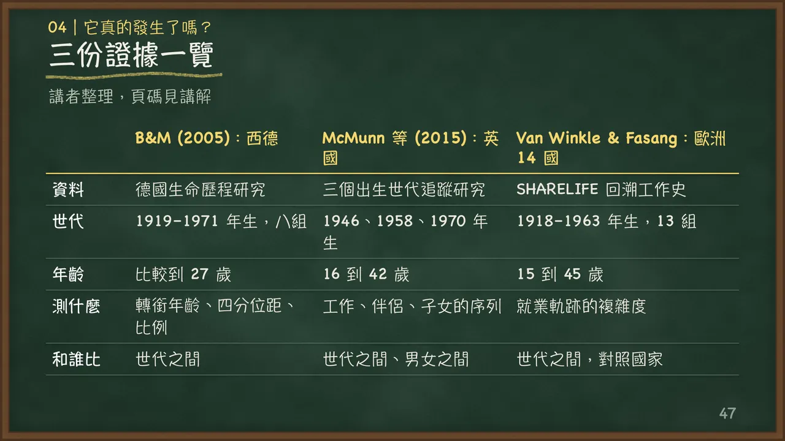
出處：B&M (2005: 35–36, 40)；McMunn 等 (2015: 60, 62–64)；Van Winkle & Fasang (2017: 9–10, 20)。
三篇的差別，正好對應「結論取決於測什麼、測誰、和誰比」。
B&M 測單一轉銜，而且因為最年輕世代受訪時 27 歲，完整的比較只到 27 歲。McMunn 等把工作與家庭合在一起看，到 42 歲。Van Winkle & Fasang 只看就業，但用國家之間的差異當基準。
Van Winkle & Fasang 的 13 組世代，是三年一組，最早與最晚兩組較寬（p. 8–9）。
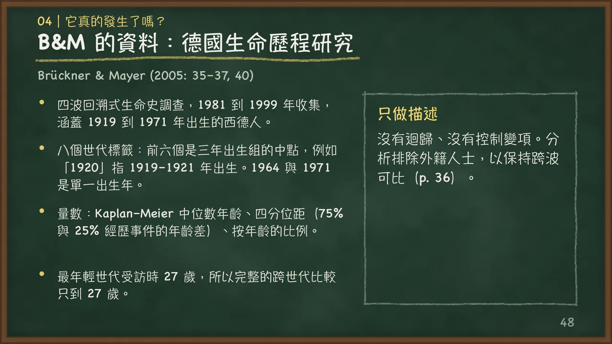
資料是德國生命歷程研究（German Life History Study）的西德部分，由 Karl Ulrich Mayer 主持（pp. 35–36）。四波：1981–83 年（1929–31、1939–41、1949–51 世代，2,171 份）、1985–87 年（1919–21 世代，1,412 份）、1989 年（1954–56、1959–61 世代，2,008 份）、1998–99 年（1964、1971 世代，2,909 份）。
世代標籤最容易引錯：表上的「1920」不是 1920 年出生者，而是 1919–1921 年出生者（p. 36）。
四分位距的定義（pp. 36–37）：75% 的出生世代已經歷該事件的年齡，減去 25% 已經歷的年齡，作為世代內變異的量數。
最後一波首次納入外籍人士，但本文的分析排除他們，以確保與較早系列完全可比（p. 36）。所以本文說不了移民的生命歷程。
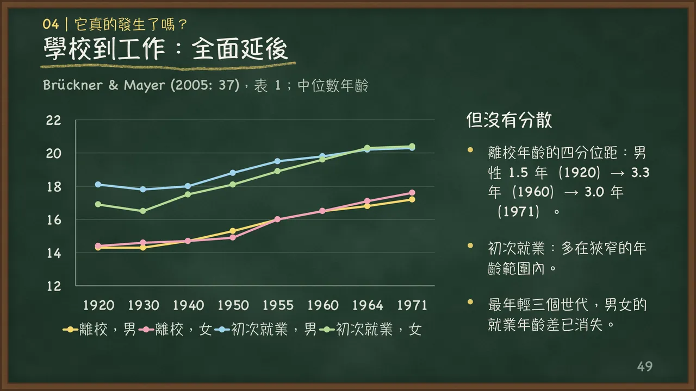
表 1（p. 37）的中位數年齡。離校：男性 14.3 歲（1920）到 17.2 歲（1971），女性 14.4 到 17.6。初次就業：男性 18.1 到 20.3，女性 16.9 到 20.4。
延後很清楚。但去標準化要看離散度。p. 38：離校年齡的世代內變異只溫和增加，男性由 1920 世代的 1.5 年，增至 1960 年前後出生男性的 3.3 年，1971 年出生男性的 3.0 年。女性的增幅更漸進但驚人地相似。
p. 40：世代成員在相對狹窄的年齡範圍內進入勞動市場，1920 世代除外，因為他們在二戰期間與之後進入。該世代男性到 24 歲才達第 75 百分位，1930 與 1940 世代是 19 歲。較晚世代的四分位比跨世代穩定。
p. 40 另一個觀察：男性初次就業的中位數年齡總是、而且日益早於完成訓練的年齡。從工作回到教育的轉銜日益常見。這是本文承認的工作面去標準化證據之一。
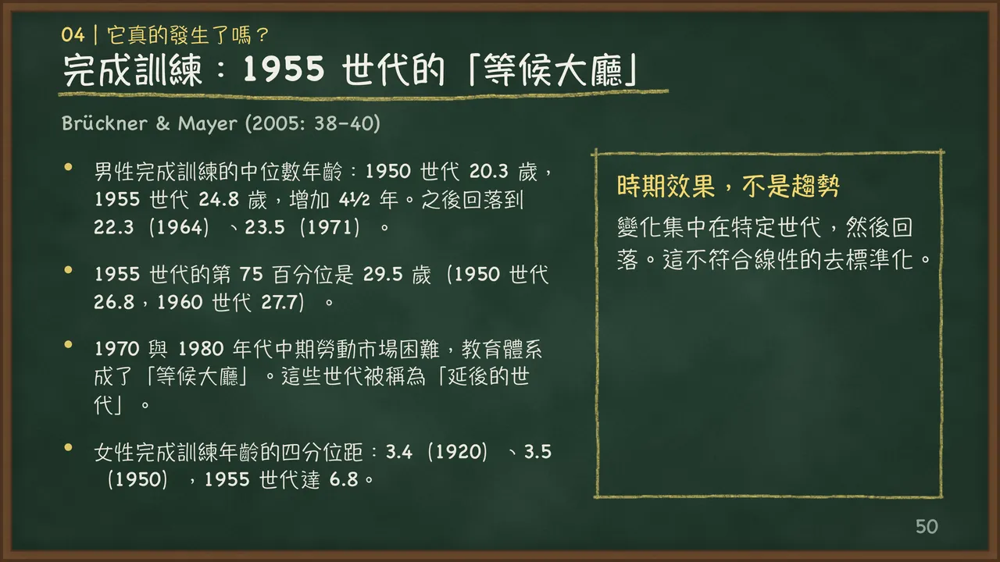
表 1 與 p. 38：男性完成訓練的中位數年齡由 1920 世代的 19.3 升到 1955 世代的 24.8。大部分變化發生在 1950 與 1955 世代之間，增加 4½ 年。其後回落到 1964 世代的 22.3 與 1971 世代的 23.5。
p. 38：自 1950 世代起，完成教育年齡的變異對女性強烈增加，對男性則下降。女性的四分位距在 1920 世代為 3.4，1950 世代 3.5，1955 世代達 6.8 的高峰。
p. 39：1955 世代的第 75 百分位是 29.5，相較於 1950 世代 26.8 與 1960 世代 27.7。1970 年代中期與 1980 年代中期的困難勞動市場，可能助長了在教育體系多待的傾向。教育體系充當了前景稀少的年輕人的「等候大廳」。這些世代因此被稱為「延後的世代」（Mayer 1994）。
這就是 B&M 說的時期效果：變化集中在某些世代，之後回落。
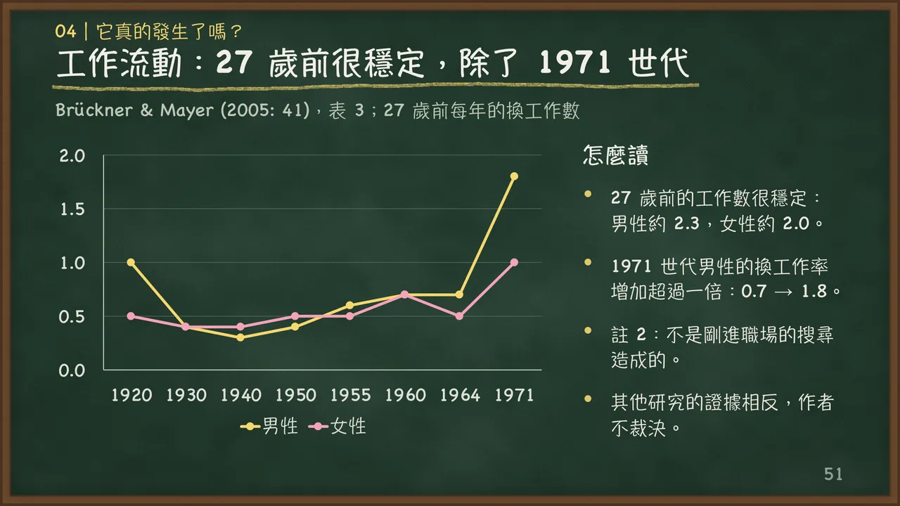
表 3（p. 41）：27 歲前所持的工作數跨世代顯著穩定，男性約 2.3，女性約 2.0。只有男女的 1971 世代與女性的 1920 世代較高，約三份工作。
但分母變了：較晚世代較晚進入勞動市場，同樣數目的工作被分配在較短的時間上。圖上是每年的換工作數。1971 年出生男性的換工作率增加超過一倍（1964 世代 0.7，1971 世代 1.8）。
註 2（pp. 49–50）排除求職行為的解釋：1950 年後出生世代到 27 歲的勞動參與期間非常相似。若是剛進職場的搜尋造成的，1960 與 1964 世代也應有同樣的換工作數。
pp. 41–42 並列兩項相反的證據：Mertens & Mayer (2004) 顯示 1960 前後與 1971 世代的非自願轉換與向下流動風險強烈增加。Hillmert (2002) 發現 1960 到 1971 年出生世代的職業穩定性沒有下降。
這是全文唯一符合「突然的不連續」判準的發現，但作者選擇不把它當成趨勢（p. 49）。
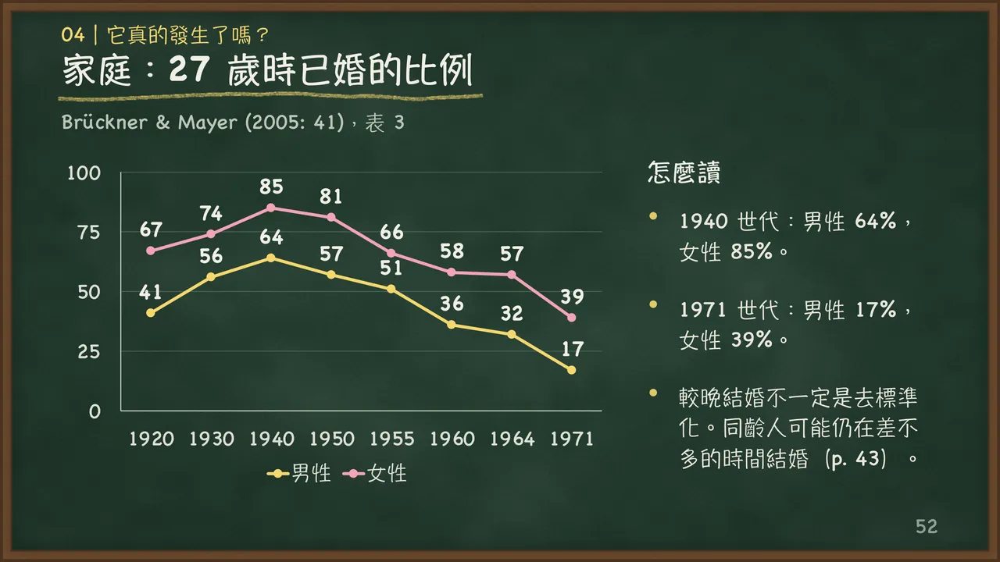
表 3（p. 41）的「已婚比例」：受訪時或 27 歲時已婚的比例（表上以 0.41、0.64 等比例呈現，這裡換成百分比）。這是本文被引用最多的一組數字。
p. 43：1971 世代男性受訪時只有 17% 已婚。1940 世代男性在此年齡已婚的可能性幾乎是其四倍（64%），1960 年出生者也有兩倍（36%）。女性在 1920 與 1940 世代之間由 67% 增至 85%，然後回落。1971 年出生女性在 27 歲前已婚的可能性，是 1950 年前後出生女性的一半。
作者立刻加上限定（p. 43）：婚姻年齡的延後不必然意味家庭形成樣式的去標準化。人們可能較晚結婚，但仍與同齡人在大致相同的時間經歷此事件，只是比父母與兄姊晚。
1971 世代的中位結婚年齡觀察不到，因為受訪時還不到一半已婚，所以作者改用按年齡的比例（p. 37）。
回到開場：台灣 25–29 歲的曾婚比例，是同一種指標的近似。
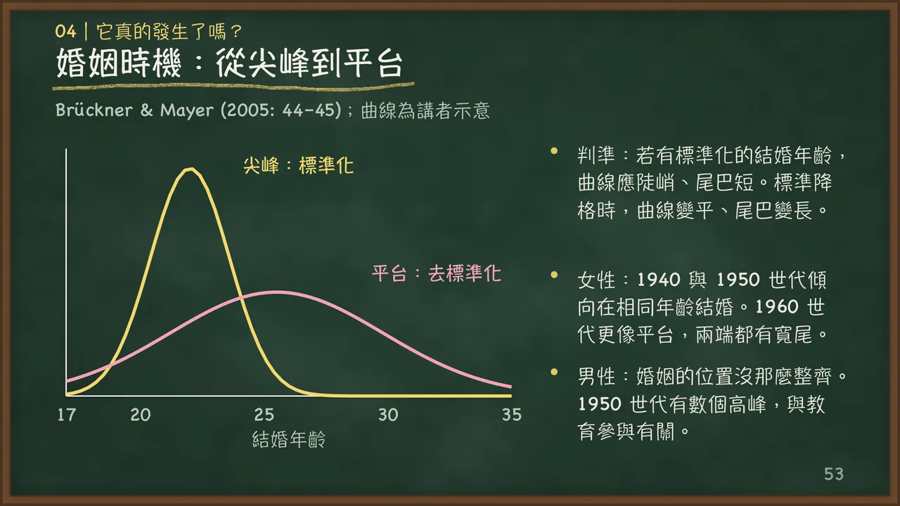
圖 4（女性）與圖 5（男性）是按年齡的結婚比例分布。作者先立下形狀判準，再讀圖（p. 44）：若真有標準化的結婚年齡，應看到陡峭而尾巴短的曲線，高峰容納大多數世代成員。年齡標準降格時，曲線變平、高峰較不明顯、尾巴變長。
女性（pp. 44–45）：1940 與 1950 年前後出生女性確實傾向在相同年齡結婚。自 1955 世代開始曲線變平。1960 世代在十幾歲後段到二十多歲後段更像一個平台，兩個方向都有寬尾。
男性（p. 45）：男性婚姻在生命歷程中的位置遠沒有那麼整齊。1950 年前後出生男性有數個高峰，在二十出頭、二十五歲上下與三十出頭，與「婚姻行為由教育參與所結構化」一致（Huinink & Mayer 1995）。
左邊的兩條曲線是講者依這個判準畫的示意，不是原圖的資料。
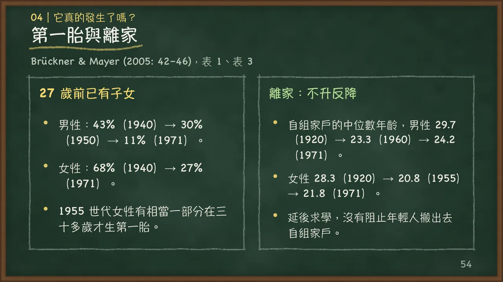
左欄（pp. 45–46，表 3）：到 27 歲，1940 年前後出生男性有 43% 已有第一胎，1950 年前後出生者只有 30%，1971 年出生男性降到 11%。女性在 1940 世代達到 68% 的高峰，然後穩定下降到 1971 年出生者的 27%。
作者承認第一胎是全文唯一難以概括的轉銜（p. 46）。圖 7 顯示第一胎對女性比對男性更受年齡結構化，1955 與 1960 世代的曲線攤開。
右欄（p. 42，表 1）：這是對「延後論」最反直覺的發現。學校、訓練與工作的延後，並未阻止世代成員搬出去自組家戶。家戶形成的中位數年齡由二十多歲後段略降至二十出頭。
四分位距方面，1920 年前後出生者的變異很大，之後陡降到 1950 世代，較年輕男性世代溫和增加（p. 42）。
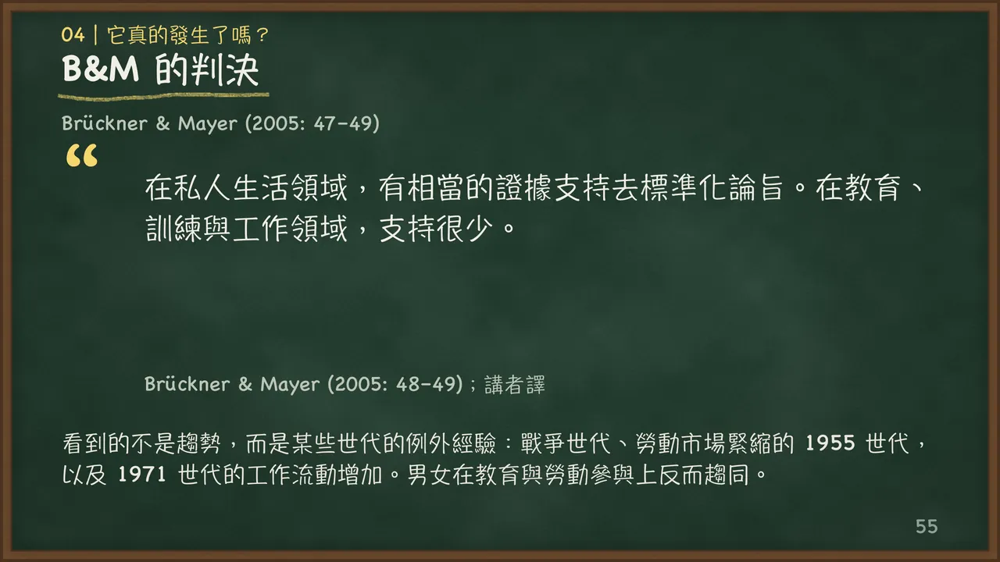
工作面（p. 47）：轉銜越來越晚。男女在學校、訓練與工作上變得更相似。訓練與工作的序列變得更模糊（fuzzier），1955 與 1960 世代尤其如此。否則，去標準化假設所預期的年齡變異增加，結果是不存在或相當小。
家庭面（p. 48）：1920 到 1940 世代的年齡鞏固，其後是更大的變異性，對女性更明顯。學校、訓練、工作與家庭形成之間的去耦合日增，例如組成獨立家戶不再與婚姻或穩定工作耦合。
同頁另一句常被漏掉：以本文的標準衡量，實際上存在一種生命歷程的同質化，因為男女在教育與勞動參與上趨同。
觸發家庭變化的三個長期發展（pp. 48–49）：教育擴張、1970 年代初開始的價值變遷、婦女運動。
三項保留（p. 49）：只看了生命早期的指標，西德可能是特例，不外推未來。所以凡以本文論退休或中年者，都是越界引用。
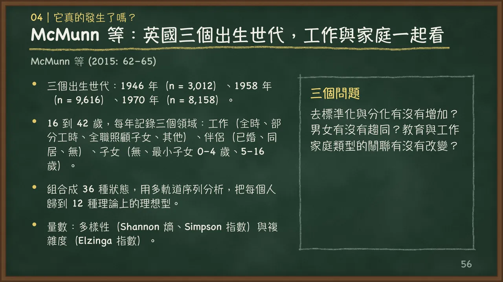
資料（pp. 62–63）：MRC National Survey of Health and Development（1946）、National Child Development Study（1958）、British Cohort Study（1970）。每個世代都是某一週出生的嬰兒。分析人數在多重插補之後（p. 64）。
測量（p. 63）：每年的工作、伴侶、子女狀態，組成 4 × 3 × 3＝36 種聯合狀態，26 個年齡，每人一條序列。到 42 歲為止，因為那是 1970 世代目前可得的最高年齡。
方法（p. 64）：前兩位作者各自依理論設計理想型，比對後同意 12 種參照序列（表 1），例如「工作，無家庭」「工作，早成家」「部分工時，早成家」。每個人被歸到最接近的理想型。用的是 Dynamic Hamming 距離。
量數見第 03 節最後一頁。多樣性問人與人之間，複雜度問一個人之內。
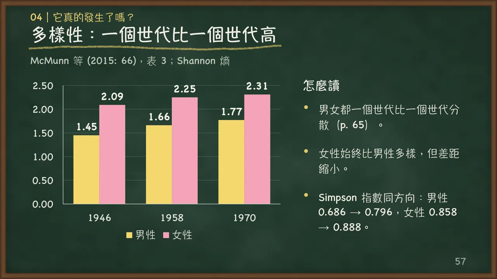
表 3（p. 66）。Shannon 熵：男性 1.45、1.66、1.77，女性 2.09、2.25、2.31。最大值約 2.5，也就是 12 個類型的自然對數。
Simpson 多樣性指數：男性 0.686、0.760、0.796，女性 0.858、0.882、0.888。
p. 65 的文字：兩個量數都顯示，男女在 12 種工作家庭類型上的分散，隨每個後續世代顯著增加。女性在所有世代都比男性多樣得多，但性別差異跨世代縮小。
依第 03 節的定義，這是人與人之間的多樣性上升，也就是 McMunn 等所說的去標準化。
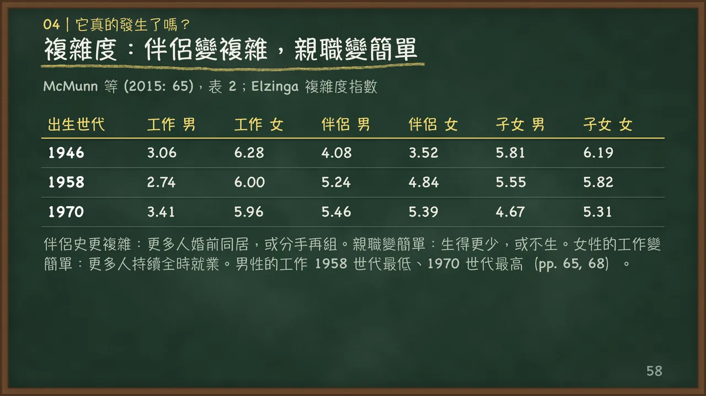
表 2（p. 65）是三個領域各自的複雜度，括號內的信賴區間這裡省略。
伴侶：男女都一個世代比一個世代複雜。親職：跨世代變簡單。作者另外分析（未呈現）：1958 世代的父母生的孩子比 1946 世代少，1970 世代有更多人到 42 歲還沒有孩子（p. 65）。
工作：男女不同。女性跨世代變簡單。男性 1958 世代最低、1970 世代最高。所有世代中，男性的工作史都遠比女性簡單。
討論（p. 68）：女性工作變簡單，與美國（Worts 等 2013）和德國（Brückner & Mayer 2005）的發現一致，因為更多人維持連續或接近連續的全時就業。男性 1970 世代的複雜度最高，可能反映這個世代在工作生命中更容易遭遇失業（Jenkins 2010）。
p. 66：多項式模型中性別與世代的交互作用顯著（Wald 檢定 p = 0.02），表示工作家庭類型的性別差異跨世代顯著縮小。
女性落在六種「持續全時」類型的比例，原文寫 31%、47%、60%（p. 66）。圖上是講者依表 4 加總的 30.8、46.7、60.1。
男性的「工作，早成家」由 46.8% 降到 14.5%。「工作，無家庭」男性由 11.1% 升到 25.7%，女性由 4.8% 升到 18.7%（表 4，p. 67）。
p. 68：這個趨同幾乎完全來自更多女性採取傳統「男性」的就業型態，而不是男性減少工時或為親職暫停工作。
p. 69：1970 世代中，長期部分工時與三十多歲的中斷，仍是女性第二與第三常見的軌跡。社會變遷仍未完成（引 Esping-Andersen 2009）。最顯眼的變化是到 40 歲出頭仍幾乎沒有家庭連結、但與勞動市場連結很強的類型。婚姻作為制度的弱化，只在最近的世代看得到。
教育（pp. 66–67, 69–70）：高教育者最可能結合持續就業與不生或晚生，無學歷者最可能工作與家庭的連結都弱。教育與世代的交互作用不顯著，關聯跨世代穩定。用 Kohli (2007: 265–266) 的判準，沿著教育產生的差異，比較像受社會形塑的樣式。
資料（pp. 9–10）：SHARE Job Episodes Panel，由 SHARELIFE 的回溯工作史建成。樣本 21,054 人，1918 到 1963 年出生，14 個歐洲國家。
狀態（p. 10）：教育、全時就業、部分工時就業、非就業、退休。就業狀態另以第幾份工作區分，所以能看到工作之間的流動。部分工時由受訪者主觀界定。
量數（p. 11）：Gabadinho 等 (2011) 的複雜度指數，見第 03 節。
模型（pp. 12–13）：每個人同時屬於一個國家與一個出生世代。交叉分類的隨機效果模型，可以同時估計複雜度的變異有多少歸於國家、多少歸於世代。作者提醒（p. 13）：這個做法沒有解決年齡、時期、出生世代的識別問題（第 4 週），它聚焦於世代效果。
研究問題（p. 9）：就業軌跡的複雜度，在國家之間的差異大，還是在世代之間的差異大？
表 3（p. 20）的組內相關：全體樣本中，複雜度變異有 15.02% 歸於國家，2.07% 歸於出生世代。男性 14.62% 與 1.38%，女性 15.97% 與 2.54%。p. 16 的文字是 15% 與 2%。
p. 16：平均複雜度 16（0 到 100）。p. 19：希臘與西班牙最不複雜，瑞典、瑞士與丹麥最複雜，比利時與西德居中。
p. 19：世代間確有朝更複雜的趨勢，支持假設 1，但不是線性。1930 年代出生者可能遭遇二戰時學校到工作的制度崩解，1950 年代出生者在 1970 年代石油危機時進入勞動市場（pp. 19–20）。
表 4（p. 22）：就業保護立法（EPL）的係數為 −0.954（模型 2），失業給付替代率（WRR）為 0.049（模型 3），都顯著。納入個人特徵與兩項制度後，國家層次的變異減少 40%，世代層次減少 30%（p. 21）。
限制（p. 24）：沒有英國與愛爾蘭這種自由市場經濟的代表。1963 年以後出生者還看不到完整軌跡。國家與世代的群數少，變異成分可能被低估，所以這是一個保守的檢驗（pp. 24–25）。
這張表是講者的整理。三篇的結論方向其實相容：工作面變化小，家庭面變化大，女性的工作朝持續就業匯聚。
不同的是測量的單位與比較的基準。B&M 測單一轉銜的年齡與比例。McMunn 等測整段序列，而且把工作與家庭合在一起。Van Winkle & Fasang 只測就業，但拿國家之間的差異當尺。
Kohli (2007: 263–265) 的判決與這三篇一致：家庭面有去標準化，但比宣稱的有限。工作面的三段式結構對男性仍穩固，女性朝它匯聚。
下一頁的討論問：這個問題本身問對了嗎？
第 1 題對應 Kohli (2007: 263–264)：84% 到 67% 的兩種讀法。台灣可以想到的指標：非典型就業比例、勞保投保年資的中斷、初次就業年齡的分布。想的時候，同時顧及「形式」與「實質」。
第 2 題對應 Van Winkle & Fasang (2017: 5–8) 的資本主義多樣性架構。提示：台灣的中小企業比重、就業保護與失業給付的水準。沒有標準答案，重點是說出理由。
第 3 題對應 Kohli (2007: 265–266) 的判準：差異若沿著階級或教育產生，是受社會形塑的樣式。差異若出現在同一群體內部，才是選項真正多元化。
第五節
Taiwan: de-institutionalized, or never fully institutionalized?
這一節要回答 第 3 週第 88 頁的問題：台灣的生命歷程是去制度化，還是從未完成制度化？
本節文獻 內政部戶籍統計；翁康容、謝雨生 (2018)；李大正、楊靜利 (2004)；簡文吟 (2004)；Raymo 等 (2015)
第 05 節回到台灣。用兩種材料：官方統計自己算，以及台灣的實證研究。
順序：先說明資料能做到哪裡，再看普及率與離散度兩張圖，然後看研究文獻，最後用 B&M 的五個面向整理，並回答第 3 週的問題。
本節的網路來源都列在講解與最後的補充文獻頁。
查過的來源：戶政司「人口統計資料快速下載」的各張婚姻狀況表、內政部開放資料 API、《人口統計年刊》、內政統計查詢網、2000 年普查的婚姻狀況表。有婚姻狀況的表全部是五歲年齡組。有單一年齡的表（例如年刊的年底人口按單一年齡分）沒有婚姻狀況。
要拿到確切的 27 歲，可行的做法是主計總處人力資源調查的個體資料（中研院學術調查研究資料庫 SRDA），需要申請。本講義沒有使用。
戶籍資料的定義：現住人口是有戶籍的國民，年底、實足年齡。未設籍的外籍配偶不在分母內。
網址：戶政司 https://www.ris.gov.tw/app/portal/346 ；內政統計查詢網 https://statis.moi.gov.tw/micst/webMain.aspx?sys=100&funid=defjsp
曾婚＝有偶＋離婚／終止結婚＋喪偶，也就是 1 減未婚比例。每一點取該世代全體正好 25–29 歲的那一年年底，例如 1967–71 年出生取 1996 年底，1996–2000 年出生取 2025 年底。最後一點與前一點重疊一年（1996 年出生）。
數值：男性 35.3、28.7、20.1、15.2、13.4、12.8、11.7。女性 59.5、49.3、36.6、30.0、24.1、20.8、18.8。
30–34 歲（中點 32 歲）可以往前推到 1962–66 年出生：女性 83.6、77.8、69.2、61.9、57.5、49.2，男性 68.3、63.5、54.2、44.9、40.6、35.0。
這是 B&M 第一個面向，普及率。跟西德的 27 歲已婚比例（第 04 節）方向相同。
資料：內政統計查詢網 c0110301「15歲以上婚姻狀況─按區域別、年齡別分」（1996–2025），與戶政司「人口數按年齡及婚姻狀況」（2007–2025）重疊年份逐格相同。https://statis.moi.gov.tw/micst/webMain.aspx?sys=100&funid=defjsp
戶政司的「婦女有偶率」從 1974 年起逐年可得，所以女性可以往前推到 1945–49 年出生的世代。1974 年底 25–29 歲的女性，就是 1945–49 年出生。
它是目前有配偶的比例，不是曾婚比例。兩者的差大致是離婚與喪偶者。1970–74 年出生的女性在 25–29 歲時，有偶率 50.8%，曾婚比例 54.4%。
數值（25–29 歲）：83.6、79.3、75.7、68.1、59.5、50.8、36.6、27.6、22.8、19.3、17.2。30–34 歲：90.6、87.4、84.1、79.8、74.4、65.4、56.1、52.0、46.7、40.3。
2015 年原表的值與同年五歲組人數重算的值相差約 0.2 個百分點，這裡保留原表值。男性沒有同樣長的線上資料。
資料：戶政司人口統計資料快速下載「婦女有偶率」https://www.ris.gov.tw/app/portal/346
這一頁對應 B&M 的第二個面向，年齡變異。但台灣的官方資料只有按年份（期間）的分布。
生第一胎：內政統計查詢網 c0120106「出生人數生母年齡概況─按生育胎次分」，1996–2025 年有生母單一年齡。講者依此計算四分位數與標準差。四分位數是累計比例首次達到該分位的實足年齡。以此算出的平均年齡與官方值相差在 0.02 歲以內。
初婚：《人口統計年刊》表 45，婚前婚姻狀況為未婚者。官方四分位數只在 2021–2025 年的年刊附件中取得。
讀法：第一胎的四分位距由 6 歲變成 7 歲，標準差由 4.71 升到 5.34。有離散，但幅度有限。初婚的四分位距在 2021 到 2025 年間略為擴大，男性由 7.9 歲變成 8.7 歲。
年刊頁面：https://www.ris.gov.tw/documents/html/5/2/popudata-quart-pub.html
翁康容、謝雨生 (2018)：1996 年台灣社會變遷基本調查與 2005 年東亞社會階層與社會流動研究，N＝7,248，1935–1984 年出生，多軌道序列分析。摘要的發現：持續期增長、生命事件順序彈性增加、起步時間由早變晚、第一個事件由完成學業轉為更多人先開始工作。初婚的定錨作用減弱。性別與家庭社會階層持續影響。本講義只讀到摘要。
Raymo 等 (2015) 的數字在 Non-marriage and childlessness 一節（作者稿，無期刊頁碼）。
Chen & Chen (2014) 與 Cheng & Cohen (2025) 只讀到摘要。前者用 1991、1996、2001、2006 年社會變遷調查。後者用婦女婚育與就業調查，教育差異在 1960 年後出生的女性更明顯。
右欄是講者的整理，依據 Kohli (2007: 265–266) 的判準。
網址：翁康容、謝雨生 https://doi.org/10.6676/TS.201812_(36).04 ；Raymo 等 https://pmc.ncbi.nlm.nih.gov/articles/PMC6070151/ ；Chen & Chen https://doi.org/10.1177/0192513X14538026 ；Cheng & Cohen https://doi.org/10.1080/17441730.2024.2352672
前三點都出自 Raymo、Park、Xie & Yeung (2015)。第一點在 Later marriage 一節：Not long ago, marriage was nearly universal and concentrated in a narrow band of “appropriate” ages, especially for women。
第二點：作者把「婚姻與生育的強力連結（包括婚後很快生育）」列為東亞婚姻制度相對穩定的特徵。韓國與台灣的平均初婚與初育年齡差，長期變化不大（引其表 1）。
第三點在 Nonmarital childbearing 一節，資料來源為內政部統計處 2014 與 OECD 2013。
第四點是翁康容、謝雨生 (2018) 摘要的發現：第一個生命事件由完成學業，轉為更多人先開始工作。
對照 B&M 的面向：普及率與年齡在變，事件間依存（婚與育）仍強。序列方面，學業與工作的先後變彈性。
左欄：李大正、楊靜利 (2004) 表 3（p. 122），主計處婦女婚育與就業調查 1980、1990、2000 年的 40–49 歲樣本，約當 1931–40、1941–50、1951–60 年出生。婚前至今一直未工作 38.5、21.8、7.9。中斷型 2.7、8.2、19.7。持續型 42.3、44.1、34.9，其中婚前無、婚後一直有工作 11.5、9.3、5.4（p. 122）。作者指出傳統型加中斷型二十年來都占一半左右（p. 122），約一半的已婚婦女仍受婚育影響。
右欄：簡文吟 (2004) 用 1993 與 2000 年的同一調查。二度就業 13.7% 升到 18.3%（摘要，p. 2）。2000 年資料中，二度就業者的平均離職月數：年長 116.7、中年 97.0、40 歲以下 70.6（表 9，pp. 21–22）。
結婚離職率：主計總處《105 年婦女婚育與就業調查》，講者依原表千人數按五歲年齡組計算。用調查時年齡近似出生世代，有存活與選擇偏誤。
對照 McMunn 等 (2015)：英國女性朝持續全時就業匯聚。台灣的研究看到的是中斷後重返增加，中斷期縮短。
網址：李大正、楊靜利 https://psc.ntu.edu.tw/jps/pub/28/assets/4.pdf ；簡文吟 https://psc.ntu.edu.tw/jps/pub/28/assets/1.pdf ；主計總處報告 https://ws.dgbas.gov.tw/public/data/771217174890v10w9i.pdf
這張表是講者的整理，每一格的依據在前五頁。
普及率：本節的兩張官方統計圖，加上 Raymo 等 (2015)。年齡變異：本節的年份分布表，加上 Cheng & Cohen (2025)。持續期間：翁康容、謝雨生 (2018) 與簡文吟 (2004)。事件間依存：Raymo 等 (2015) 與翁康容、謝雨生 (2018)。序列：翁康容、謝雨生 (2018)。
依 B&M (2005: 35) 的嚴格判準，大多數指標都要改變才算一般的去標準化。台灣的圖像和西德相近：家庭面部分成立，而且沿著社會群體分化。
限制：官方資料沒有單一年齡、也沒有按世代的離散度。台灣還沒有用 B&M 的量數系統測量各項轉銜的研究。
第 3 週第 88 頁的問題：依 Kohli 的判準，台灣「後半段」的年齡界線何時才具全民基礎？今天的問題是「去制度化」，還是「從未完成制度化」？
日期與出處沿用第 3、4 週講義：1950 勞工保險開辦，給付已含老年給付。1968 九年國民教育（57 學年度實施）。2008 年 10 月 1 日國民年金開辦，納入未參加其他社會保險者。2009 年 1 月 1 日勞保年金施行。2008 年勞基法強制退休年齡由 60 歲提高為 65 歲（第 4 週講義只確認了 4 月 25 日三讀）。2018 年起勞保老年年金請領年齡每兩年提高一歲，2026 年起 65 歲（勞工保險條例第 58 條）。2023 年 1 月 1 日民法成年年齡 18 歲。2014 年十二年國民基本教育。
讀法：前半段的界線由學校體系早早造出，而且全民適用。後半段的界線晚到，而且依職業身分分立（勞保、公保、農保、國保），到 2008 年國民年金才把其他人補進來。
下一頁給本講的暫定答案。
這是講者的暫定答案，供課堂討論，不是任何一篇文獻的結論。
左欄回應 Kohli 的三分結構：台灣的「準備」段落由學校體系很早制度化，但「退休」段落沒有一條全民共享的界線，制度依職業身分分立（第 3 週第 67 頁的提問）。所以台灣的問題不只是「去制度化」，也是「從未完成制度化」。
右欄回應 B&M：家庭面在普及率與時機上去標準化，但婚與育的依存仍強。和西德的形狀相近。
可以連到 Kohli (2007: 268)：如果後半段本來就沒有一條共享的年齡界線，年金改革的衝突就比較難靠一個集體方案化解。這是講者的推論，第 06 節再談。
第六節
Implications for social policy
這一節要回答 年齡界線該保留、鬆綁，還是重畫？
本節文獻 Mayer & Schoepflin (1989: 198–203)；Kohli (2007: 265–268)；Brückner & Mayer (2005: 48)
第 06 節把前面的理論與證據，轉成三個政策問題。
一、法定年齡要有配套才會生效（Mayer & Schoepflin 1989: 198）。二、退休年齡界線為什麼該改、又為什麼改不動（Kohli 2007: 265–267）。三、去制度化會讓世代衝突更尖銳（Kohli 2007: 268）。最後補一個家庭面的問題（B&M 2005: 48）。
前兩點是 Mayer & Schoepflin (1989: 198) 的原意。第一點引 Mayer & Müller (1986: 229) 在德國老年年金脈絡中的論證。
第三點是講者的推論：如果年齡規範的效力來自給付與服務，那麼只移動年齡、不調整給付與服務，行為不一定跟著移動。
右邊是第 4 週第 83 頁的例子。想一想：延後請領年齡的同時，有沒有讓人做得下去、找得到工作的配套？這一題本講義沒有查證，可以自己找資料。
也可以連到第 02 節的反例：Blossfeld 發現準法定的入學與離校年齡，在國家秩序崩解時仍然存續。年齡規範一旦扎根，也可能自己撐住。
改革走不遠，正好讓這些結構錨變得可見（p. 266）。
左欄（pp. 265–266）：退休的固定年齡界線，與當代的價值與系統要求不相容。價值兩項：普遍主義（可被視為年齡歧視，美國等國已在憲政上廢除）與個體化（限制選擇自由）。系統三項：浪費人力資本、干擾勞工的最適配置、加深社會安全的財政問題。
改革方向（p. 266）：讓年齡界線更彈性，或完全廢除。廢除意味撤退公共世代契約，轉向純粹市場基礎的終生工作模型。但到目前為止，改革在創造所欲的變化上並未走得很遠。即使在美國這類已廢除強制退休的國家，年齡界線在形塑雇主與勞工的行為上仍相當有效。
右欄（pp. 266–267）：年金做的遠多於提供所得保障。這四項功能就是結構錨。在這些功能之光下，制度化生命歷程的持續應該不那麼令人驚訝。
第四項接回 Kohli (1987) 的道德經濟論。想一想：台灣的年金改革，觸動了四項中的哪幾項？
p. 268：我們也需要檢視中介世代衝突的制度，例如政黨或工會。只要年齡分級的生命歷程方案仍穩固在位，這類年齡整合的中介者對橋接分歧就是必要的。然而，年齡分級的方案本身也透過為衝突提供集體解決方案而解除衝突的引信。因此，去制度化及其年齡界線的解消，很可能不會讓年齡與世代衝突消失，反而使它們更尖銳、更難處理。
這與一般論述的方向相反。一般把彈性化當成緩解世代緊張的方案，Kohli 則指出年齡界線本身就是衝突的集體解方。
p. 268 年輕人支持公共世代契約的兩個理由：一部分取決於他們是否信任契約能持續，使自己日後也領得到。另一個理由是年金免除了扶養父母的義務，需要時也能依靠較年長的世代。
右邊的提問連到第 05 節：台灣的老年給付依職業身分分立，年改的衝突線可能同時是世代與職業別。
p. 48 是 B&M 文中最不像實證論文的一段思想實驗。作者先問：轉銜時機的變異增加，真的能叫去標準化嗎？
然後想像 1960 年代中期的一間幼稚園，為簡單起見假設只有頭胎子女就讀。家長的年齡分布，肯定比 1980 或 1990 年代中期類似幼稚園的更一致。較年輕世代所生的子女，會在自己生命歷程的不同階段照顧年邁的父母。這些子女組成家庭時，祖父母能協助育兒的可得性，大概會有更大的變異。1950 年代中期年輕成人結成的友誼，其重要轉銜的經驗比較年輕世代的更同步。這對親屬以外的支持網絡有意涵。
右欄是講者的推論：這段把「年齡變異增加」翻譯成「非正式支持網絡的同步性下降」。托育、長照與家庭照顧的政策，常預設家裡有一位時間剛好的照顧者。
第 8 週（幼年期）與第 14 週（長期照顧）會再用到。
六點依序對應本講六節。可以試著各用一句話說明，再回到第 3 頁的學習目標自評。
第 3 週問題的簡答：台灣的前半段（教育）很早就制度化，後半段（老年）晚到而且依職業分立，所以有「從未完成制度化」的一面。家庭面則有部分去標準化：時機與普及率在變，婚育的綁定仍在。這是講者的暫定答案。
依課綱：第 6 週（10 月 20 日）停課，教師出席研討會。第 7 週（10 月 27 日）主題是「福利國家作為生命歷程政策：福利體制、生命歷程體制與東亞經驗」。
必讀：Leisering, L. (2003). Government and the life course. In Handbook of the Life Course (pp. 205–225)。Mayer, K. U. (2007). Life courses and life chances in a comparative perspective. In Analyzing Inequality (pp. 17–55)。
延伸：Esping-Andersen (1990) 第 1–3 章、Möhring (2016)、Holliday (2000)、Kvist (2015)。
銜接：Kohli (2007: 260–261) 的生命歷程體制四型（Mayer 2001），以及「認真對待女性的生命歷程，可能要求把類型畫得不同」的限定，下週會展開。右欄的問題是讀書的提示。
書目與 DOI 依網站的課程資料。本頁是兩篇必讀與 Mayer & Schoepflin (1989)。
書目與 DOI 依網站的課程資料。兩處簡化：McMunn 等與 Van Winkle & Fasang 的副標題在投影片上省略，完整篇名見課綱。
Mayer & Müller (1986) 的完整書名是 Human Development and the Life Course: Multidisciplinary Perspectives。本講義未取得全文，引用處都標明轉引。
Van Winkle & Fasang (2017) 的頁碼依課程資料夾的線上優先版 PDF（頁 1–29）。
網址與閱讀狀態見下一頁的講解。
網址：
Chen & Chen (2014) https://doi.org/10.1177/0192513X14538026 （只讀到摘要）
Cheng & Cohen (2025) https://doi.org/10.1080/17441730.2024.2352672 （只讀到摘要）
Raymo 等 (2015) https://doi.org/10.1146/annurev-soc-073014-112428 ；作者稿 https://pmc.ncbi.nlm.nih.gov/articles/PMC6070151/
李大正、楊靜利 (2004) https://psc.ntu.edu.tw/jps/pub/28/assets/4.pdf
翁康容、謝雨生 (2018) https://doi.org/10.6676/TS.201812_(36).04 （只讀到摘要）
簡文吟 (2004) https://psc.ntu.edu.tw/jps/pub/28/assets/1.pdf
戶政司人口統計資料 https://www.ris.gov.tw/app/portal/346 ；內政統計查詢網 https://statis.moi.gov.tw/micst/webMain.aspx?sys=100&funid=defjsp ；人口統計年刊 https://www.ris.gov.tw/documents/html/5/2/popudata-quart-pub.html
主計總處《105 年婦女婚育與就業調查報告》https://ws.dgbas.gov.tw/public/data/771217174890v10w9i.pdf
Kohli (2007) 與 Brückner & Mayer (2005) 轉引的研究（Maddison 2001、Scherger 2007、Settersten & Hagestad 1996 等），完整書目見兩篇原文的參考文獻。
本講義轉引的研究，完整書目見各篇原文的參考文獻。
本頁與下一頁列出講義中轉引的研究，以及它們出自哪一篇閱讀。轉引的意思是：本講義沒有讀這些原文，內容依閱讀的作者轉述。
完整的書目資料，見 Kohli (2007: 268–271) 與 Mayer & Schoepflin (1989: 204–209) 的參考文獻。
完整的書目資料，見 Brückner & Mayer (2005: 50–53)、McMunn 等 (2015: 70–75) 與 Van Winkle & Fasang (2017) 的參考文獻。
Kohli (1985, 1986) 與 Settersten & Mayer (1997) 是第 3、4 週的閱讀，書目見前兩週講義與課綱。第 7 週的閱讀書目見課綱。